How to use this guide
This guide is for everyone who works in Atlas: owners, managers, bartenders and anyone who reads along. It explains what each part of Atlas is for, who can use it, and how to do the everyday jobs step by step.
You don't need to read it front to back. Start with Getting started and Home, then go straight to the chapter for the job in front of you.
How the guide is laid out
Every chapter follows the same pattern:
- An opener that says in a sentence or two what the page is for.
- Who uses it, shown as role badges: Administrator Manager Viewer.
- Key screens, with a screenshot and, where it helps, numbered markers explained underneath.
- How-tos: numbered steps that name the exact buttons you press.
- Tips and important notes that save time or prevent a mistake.
Conventions
- Buttons, tabs and labels appear exactly as they read on screen, like Start stock count or Mark as ordered.
- Where to go is written as a path, like DataPar levels.
- Keyboard shortcuts look like Ctrl K. On a Mac, use ⌘K instead.
- "Managers" means both Administrators and Managers unless a step says otherwise.
- Screenshots use a demonstration venue, the Harbour Room in Reykjavík, with invented staff, suppliers and figures. Your own Atlas shows your venue's data.
Chapter 1
Welcome to Atlas
Atlas is the operating system for your venue: stock, recipes, orders, shifts, checklists, team and knowledge in one place, with an assistant that answers from your own records.
Who uses it Administrator Manager Viewer
What Atlas is
Atlas brings the everyday running of a bar or restaurant into one shared place that works on a computer, a tablet and a phone. The same account signs in on every device, and everyone sees the same, up-to-date picture.
It covers the whole service day:
- Before service: what needs attention, the opening checklist, fridge temperatures, who is on tonight.
- During service: recipes at the bar, what can and can't be served, quick messages to the team.
- After service: the closing checklist, a handover note for the next shift, a stock count.
- Behind the scenes: purchase orders and deliveries, the rota, the team directory, procedures and training, reports.
The problems it solves
One version of the truth
No more stock numbers in one spreadsheet, recipes in another and the rota in a group chat. Every page reads from the same records.
Stock you can trust
Stock comes from counts a manager has verified, plus every delivery and waste record since. Atlas never pretends to know what it hasn't counted.
Less chasing
Needs attention on Home and the notifications bell gather what is out, overdue or waiting for you, each with a button that takes you straight there.
Answers in plain language
Ask Atlas AI "What's low before tonight?" and get an answer built from your own records, with the sources shown.
A shared record of who did what
Checklist ticks, counts, orders and approvals are saved with the person's name and the time, on every device.
The right tools for each role
Bartenders see what they need behind the bar. Costs, orders and settings stay with managers.
Our philosophy
Atlas is built around a few simple principles. You'll see them on every page.
- Records, not guesses. Stock, costs and availability come from real records. Where a record is missing, Atlas says Not counted, Not set or Unknown rather than filling the gap.
- People decide. Atlas AI can prepare an order, a count or a message, but a person approves it with a tap. It never changes stock, orders or shifts on its own.
- Everything is traceable. Changes are kept with who made them and when. Most things are deactivated, archived or retired rather than deleted, so history stays intact.
- Calm by default. Home shows what needs you first and leaves the rest a scroll away.
How the parts fit together
Every part of Atlas reads from and adds to one shared picture of your venue: a verified count updates Inventory, which updates recipe availability, the suggested order, Home and Atlas AI.
A few examples of how the pieces connect:
- A stock count that a manager verifies becomes the stock shown in Inventory. That tells Recipes what can be served tonight and tells Purchasing what is below par.
- Receiving a delivery in Purchasing raises stock straight away and, by default, updates the item's cost.
- Publishing the week in Shifts shows the rota to the team and fills the Tonight list on Home.
- Atlas AI reads all of this, but only what your role is allowed to see.
Chapter 2
Getting started
Sign in, find your way around, and learn the handful of controls that are the same on every page.
Who uses it Administrator Manager Viewer
Getting access
Everyone signs in with their own email address and password. There are two ways a manager can give you access.
1. A setup link. When a manager adds you in Team with a login, Atlas makes a one-time setup link. No email is sent: your manager shares the link with you privately.
- Open the link your manager sent you. The page reads Set up your Atlas login.
- Enter a New password of at least 10 characters, and type it again in Confirm password.
- Press Create login. Atlas confirms: "Your password is set. You can now sign in to Atlas with your email and password."
2. An email invitation. A manager can also use Invite by email in Team. Atlas emails you a secure invitation, and you choose your password from it.
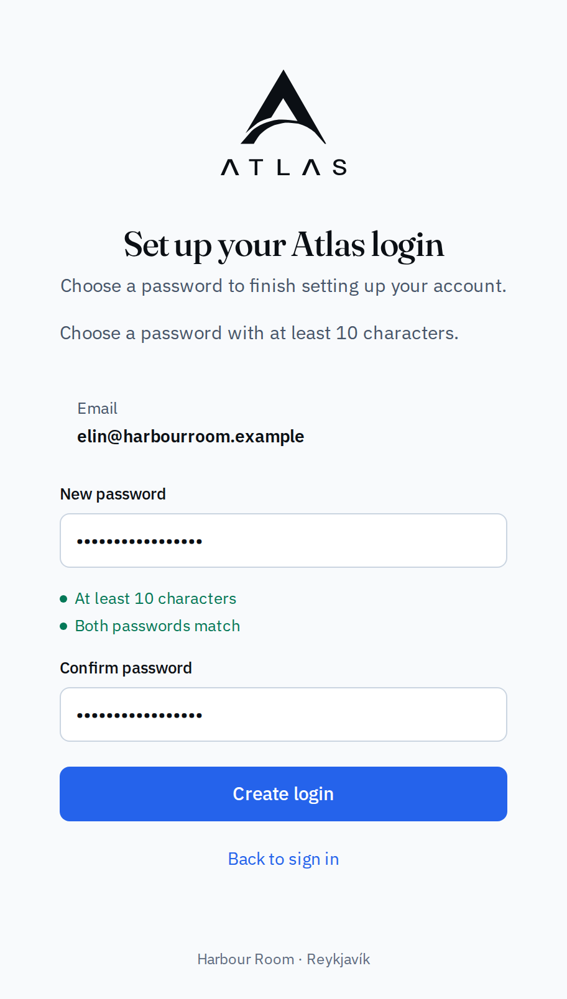
DesktopSet up your Atlas login: the page a new team member sees when they open their setup link or invitation.
A setup link works once. If it has expired or was already used, you'll see "This invitation has expired or was already used. Ask your manager for a new one." A manager can create a fresh one with New setup link on your profile.
Signing in
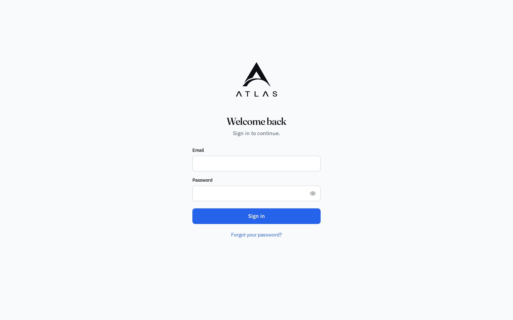
DesktopThe sign-in screen. Once Atlas knows your venue's name on this device, the line under Welcome back reads “Sign in to” your venue.
- Open Atlas in your browser.
- Enter your Email and Password. Press the eye button to show or hide what you typed.
- Press Sign in.
If Atlas says "Email or password is incorrect.", check both and try again, or use Forgot your password? to get a reset link by email. After a reset you are signed out on every device and sign in again with the new password.

PhoneThe same account signs in on a phone browser.
Who can sign in. Only people with an active profile and one of the four roles can open Atlas. When a manager switches off someone's Atlas access, that person is signed out on their next action.
Signing out with Sign out signs out this device only. Your other phones and computers stay signed in.
Your Atlas home screen at a glance
This is what an administrator sees after signing in. The numbers are explained underneath.
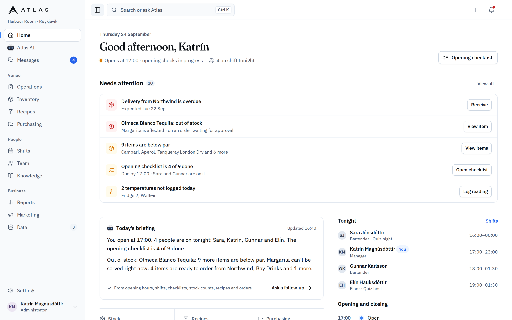
DesktopHome on a computer, 20 minutes before opening: what needs attention first, then Today’s briefing and who is on tonight.
- Marker 1: The sidebar. Every part of Atlas your role can open, grouped into Venue, People and Business. The line under the logo shows your venue's name and city.
- Marker 2: Search or ask Atlas. Find any item, recipe, person or action, or ask Atlas AI a question. Shortcut Ctrl K or ⌘K.
- Marker 3: Quick actions (+). Opens the list of things you can create or do from anywhere.
- Marker 4: Notifications. A red dot means something is unread.
- Marker 5: Greeting and today's status. Whether you are open, when you close or open, and how many people are on shift tonight.
- Marker 6: Opening checklist. Goes straight to today's checklist. After last orders it becomes Closing checklist.
- Marker 7: Needs attention. Up to five things to act on first, each with its own button. View all shows the rest.
- Marker 8: Today's briefing. A short summary of the day built only from your records.
- Marker 9: Tonight. Who is on shift today, with their times.
- Marker 10: Your account. Your name and role. Opens the account menu.
Chapter 4 describes Home in detail.
Finding your way around
The sidebar
The sidebar on the left holds every page your role can open, always in the same order:
| Group | Pages |
|---|---|
| (top) | Home, Atlas AI, Messages |
| Venue | Operations, Inventory, Recipes, Purchasing |
| People | Shifts, Team, Knowledge |
| Business | Reports, Marketing, Data |
| (bottom) | Settings, then your account button |
Pages your role can't use are simply left out. Bartenders and viewers, for example, don't see Purchasing, Reports, Marketing or Data.
A number next to Messages counts unread messages. A number next to Data counts catalogue changes waiting for a manager's approval.
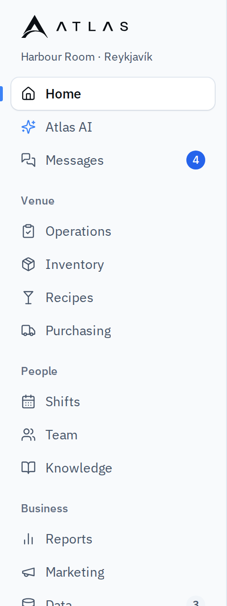
DesktopThe sidebar groups the pages by what they are for. Badges show unread messages and changes waiting for approval.
Screen sizes. On a wide screen, the button at the top left collapses the sidebar to a narrow rail of icons (Collapse sidebar / Expand sidebar); Atlas remembers your choice on that device. Hover over a rail icon to see its name. On a tablet the rail is the default, and the full sidebar opens over the page with Open navigation.
The top bar
The top bar is the same on every page:
- the sidebar button,
- the page title,
- the search field Search or ask Atlas,
- the + Quick actions button (computers and tablets only),
- the Notifications bell.
Search or ask Atlas
One box finds anything in Atlas and passes questions to Atlas AI. Open it in any of these ways:
- click Search or ask Atlas in the top bar,
- press Ctrl K (⌘K on a Mac), or / when you aren't typing in a field,
- on a phone, tap the search icon in the top bar,
- press + Quick actions to open it straight on the list of actions.
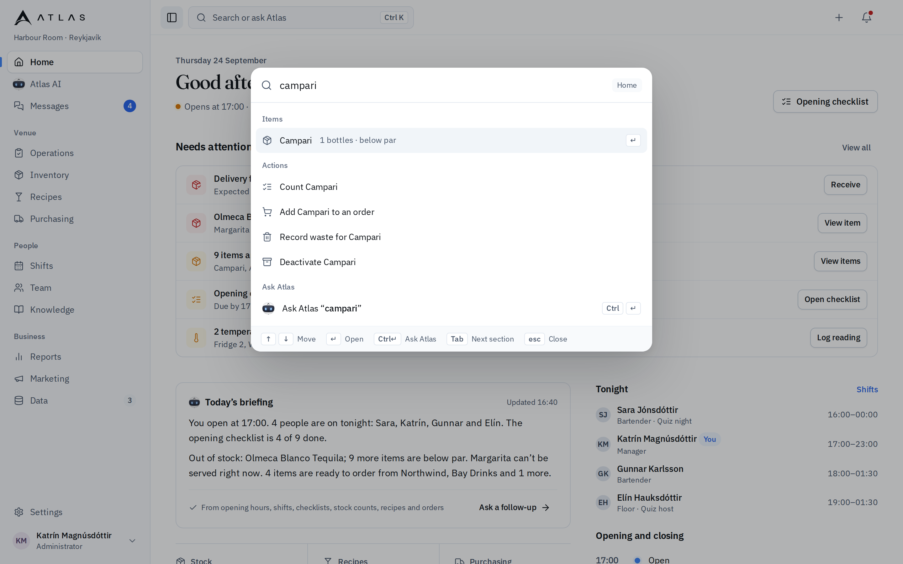
DesktopType a few letters and results appear by group. Here “campari” finds the item, the recipes that use it and matching actions.
Before you type, Atlas shows Suggested actions for the page you're on, the records you opened Recently, and your actions.
As you type, results appear in groups: Items, Recipes, Suppliers (managers), People, Articles, then Actions and Go to. Items show their stock at a glance, for example "3 bottles · below par", or "Not counted — no verified stock". When your search names an item, actions such as Count that item appear too.
To ask a question, type it and choose Ask Atlas "…", or press Ctrl ↵ (⌘ ↵ on a Mac). Atlas AI opens a new conversation with your question already sent.
Use the arrow keys to move, ↵ to open and Esc to close. The list of Recent records belongs to you and is cleared when you sign out.
Notifications
The bell collects what needs you and what has changed:
- every Needs attention row from Home that your role can see,
- one entry for each Messages conversation with unread messages, for example "Sara Jónsdóttir in General" or "3 new messages in Operations", with an Open button,
- updates that other parts of Atlas send.
Use All or Needs action at the top to filter. The … menu has Mark all as read and Notification settings. When there is nothing new you'll see "You're up to date".
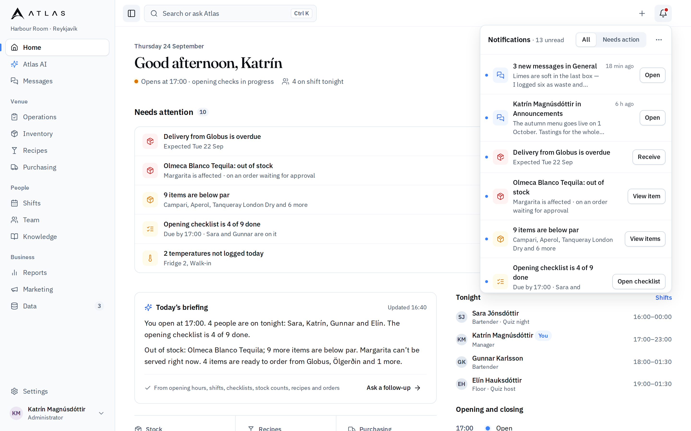
DesktopThe notifications panel. Each entry has a button that goes straight to the right page and marks it as read.
Alerts on the device itself (push notifications) are a separate, per-device choice under SettingsNotifications. That page shows whether alerts can reach your device yet. On iPhone and iPad, Atlas must first be added to the Home Screen.
Your account menu
Click your name at the foot of the sidebar (on a phone: the account row at the top of More). The menu shows your photo or initials, your name and your role, and these options:
- Your profile: opens your own profile in Team.
- Preferences: your start page and reduced motion.
- Notification settings: alerts on this device.
- Keyboard shortcuts (computers only): the full list of shortcuts.
- Sign out: signs out this device only.
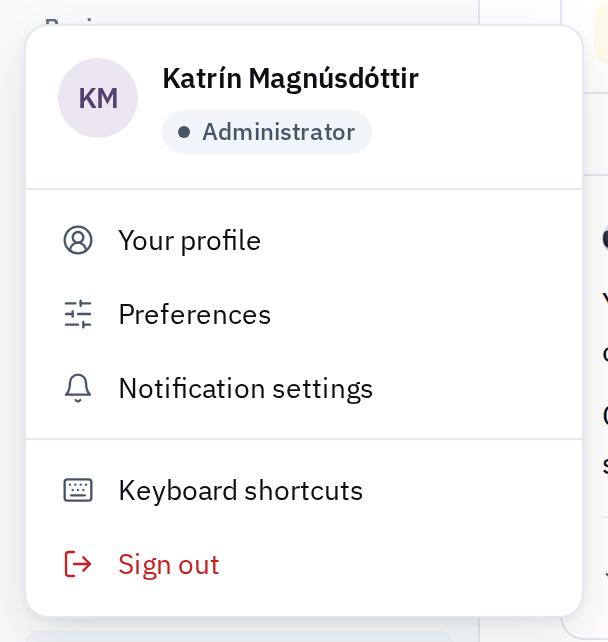
DesktopThe account menu, opened from your name in the sidebar.
Atlas shows your profile name everywhere. If no name has been set yet, you appear as "Team member". Your email address is never shown as your name.
Keyboard shortcuts
| To do this | Press |
|---|---|
| Search or ask Atlas | Ctrl K / ⌘K |
| Search (when you aren't typing) | / |
| Move in lists and menus | ↑ ↓ |
| Open the selected result | ↵ |
| Ask Atlas with what you typed | Ctrl ↵ / ⌘ ↵ |
| Close a panel or dialog | Esc |
Atlas on a phone
On a phone, a tab bar at the bottom replaces the sidebar. It is the same for every role:
- Home
- Inventory
- Atlas: the sparkles button in the middle opens Atlas AI
- Recipes
- More: everything else, with a badge for unread messages
More opens a sheet with your account row at the top, then every other page your role can open, then Settings (managers) or Preferences (bartenders and viewers), and Sign out.
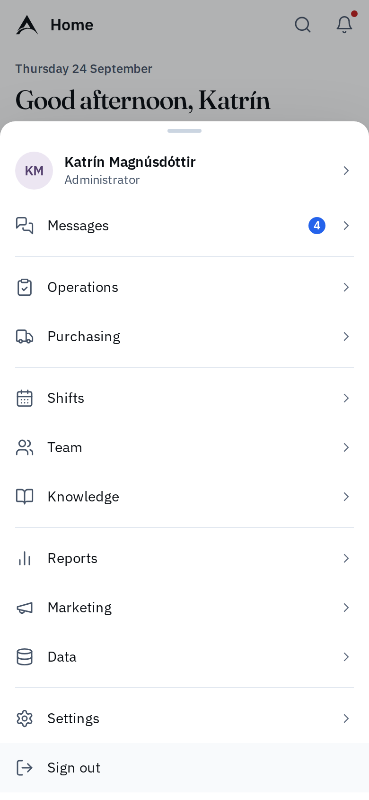
PhoneAn administrator’s More sheet lists every other page.

PhoneA bartender’s More sheet lists only the pages a bartender can use.
A few phone differences worth knowing:
- The top bar shows the page title, a back arrow where there is one, the search icon and the bell. Quick actions (+) is only on larger screens.
- The tab bar hides while you are in an Atlas AI conversation, counting stock or working in a full-screen sheet, so you have the whole screen.
- Notifications open full screen. Press back to close them.
Chapter 3
Roles & permissions
Every person in Atlas has one of four roles. The role decides which pages they see and what they can change.
Who uses it Administrator Manager Viewer
The four roles
Administrator
Usually the owner. Everything a manager can do, plus the protected settings: role permissions in Team access, Security and System health. Only an administrator can make someone else an administrator.
Manager
Runs the venue day to day: verifies stock counts, orders and receives deliveries, plans and publishes shifts, manages recipes, the team and knowledge, and sees costs and reports.
Bartender
Works the bar: counts stock, ticks checklists, logs temperatures, reads recipes, messages the team, sees and confirms their own shifts, and asks Atlas AI.
Viewer
Read-only access to the everyday pages, for example for a trainee or an accountant. Can read messages and ask Atlas questions, but can't count, tick or post.
There is also Schedule only. This isn't a role but a person on the shift roster without an Atlas login. They can be put on the rota, but they can't sign in or confirm shifts.
Who can do what
| Area | Administrator | Manager | Viewer | |
|---|---|---|---|---|
| Home | Yes | Yes | Limitedno Purchasing tile; shows "My next shift" | Limitedgreeting and Needs attention only |
| Atlas AI conversations | Yesapproves every kind of proposal | Yes | Limitedcan approve counts, messages and catalogue suggestions; other proposals wait for a manager | Limitedquestions and answers only |
| Atlas AI › Decisions | Yes | Yes | No | No |
| Messages | Yesposts Announcements, removes any message with a reason | Yes | Limitedposts everywhere except Announcements | View onlyreads, pins, marks read |
| Operations | Yesincl. skip, target ranges and schedule | Yes | Limitedtick, notes, complete, log temperatures | View only |
| Inventory items | Yesadd, edit, deactivate, waste, costs, suppliers | Yes | Limitedcount, identify, suggest a product or barcode; no costs or suppliers | View onlycan identify items |
| Inventory › Movements and Waste | Yes | Yes | No | No |
| Stock count | Yesstart, count, submit, verify, send back, cancel | Yes | Limitedstart, count, submit, cancel own count | No |
| Recipes | Yescreate, edit, archive, delete, costs, public menu | Yes | View onlyspecs and availability, no costs | View onlysame as bartender |
| Purchasing | Yes | Yessome orders may need a different approver | No | No |
| Shifts | Yesplan, publish, time off, confirmations | Yes | Limitedown and team schedule, confirm, availability, time off | LimitedSchedule tab only |
| Team | Yesincluding the Administrator role | Yesexcept the Administrator role | Own onlyown profile, photo and emergency contacts; sees the directory | Own onlysame as bartender |
| Knowledge | Yeswrite, publish, retire | Yes | Limitedread, required reading, training | Limitedsame as bartender |
| Reports | Yesread and export | Yes | No | No |
| Marketing | Yes | Yes | No | No |
| Data | Yes | Yes | No | No |
| Settings | Yesevery section | Limitedno Team access, Security or System health | LimitedPreferences and Notifications | LimitedPreferences and Notifications |
| Search, notifications, account menu | Yes | Yes | Yes | Yes |
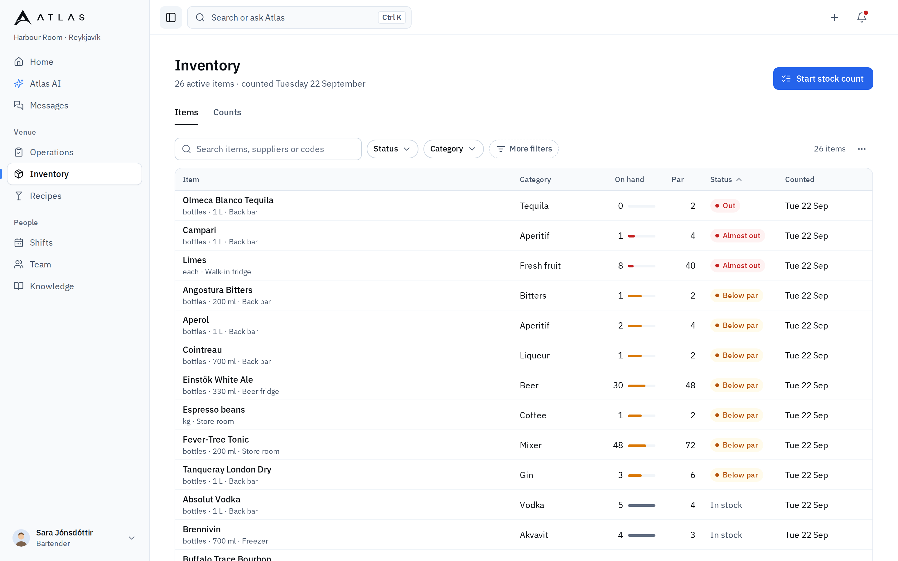
DesktopInventory for a bartender: quantities, par and status, with Start stock count, but no supplier or cost columns.
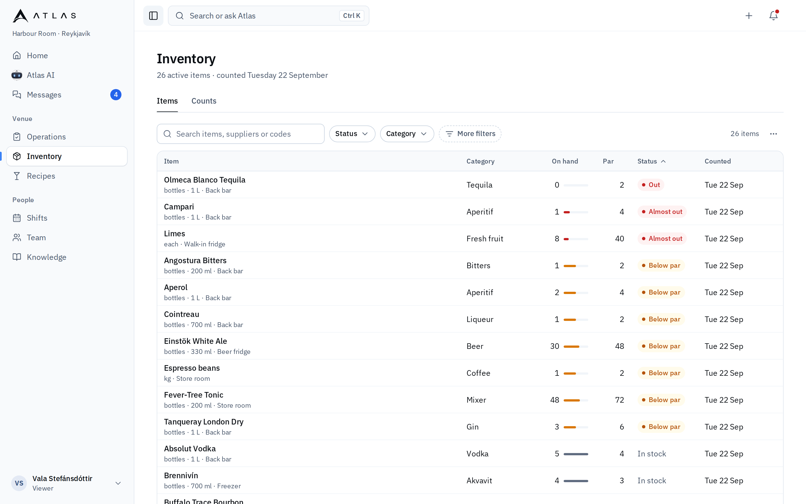
DesktopInventory for a viewer: the same list to read, without Start stock count or Add item.
Good to know about roles
- Roles are set on the person's profile. A manager opens Team(person)Access, chooses the Role and presses Save access. Chapter 13 has the steps.
- Managers can't create or change administrators. Only an administrator can give or remove the Administrator role.
- Nobody can change their own role or switch off their own access. Ask another manager or an administrator.
- At least one active manager or administrator must remain. Atlas refuses a change that would leave the venue without one.
- New people start small. Someone added with a login in Team starts as a Bartender (Staff login) or a Viewer (Read-only login). To make someone a manager, add them first, then change their role.
- Some approvals depend on your venue's rules. An order may need approval before it is marked as ordered, and the rules can require an administrator, or a different manager from the one who submitted it.
- Atlas AI follows your role. It only reads what your role may see, and its proposals follow the same rules as the buttons in Atlas.
- Links respect roles too. If you open a link to a page that isn't for your role, Atlas explains that it's for managers and takes you to Home. Nothing is changed.
Chapter 4
Home
In ten seconds: is today under control, and what needs me?
Who uses it Administrator Manager Viewer
Home is the first page after you sign in, unless you've chosen another start page in Preferences. It reads your opening hours, shifts, checklists, stock counts, recipes and orders, and puts what matters most at the top.
DesktopHome for an administrator: the day’s status, Needs attention, Today’s briefing and Tonight.
The top of the page
- Date and greeting, for example "Good afternoon, Katrín".
- Today's status from your saved opening hours: "Opens at 17:00 · opening checks in progress", "Open · closes at 01:00 (in 2 h 20 min)" or "Closed today · opens …". Next to it: how many people are on shift tonight.
- The Opening checklist button, which becomes Closing checklist after last orders. It is shown to everyone who can tick checklists.
If opening hours aren't saved, Home says "Opening hours aren't set". Managers get a Set hours link. Everyone else sees "A manager can add them in Settings."
Needs attention
A short list of what to deal with first, with a count next to the heading. Up to five rows are shown; View all opens the notifications panel filtered to Needs action.
Each row says what's wrong and offers one button. Typical rows:
| Row | Button |
|---|---|
| Stock isn't counted yet | Start stock count |
| (Item): out of stock, with the recipes affected and whether it is already on an order | Add to order (managers) or View item |
| (Item) is below par / 6 items are below par | View items |
| (Count) paused · 3 of 12 | Continue |
| (Count) is waiting for verification (managers) | Review |
| Opening checklist is 4 of 9 done | Open checklist |
| 2 temperatures not logged today | Log reading |
| (Recipe) can't be served | Open recipe |
| Order from (supplier) needs approval (managers) | Review |
| Delivery from (supplier) is due today / is overdue (managers) | Receive |
| (Proposal) is waiting for your approval (approvers) | Review |
| 3 catalogue changes are waiting for your approval (managers) | Review |
When everything is handled you'll see "Nothing needs you right now", with the time Atlas last checked.
Today's briefing
A plain-language summary of the day in one or two sentences, for example: "You open at 17:00. 4 people are on tonight: Sara, Katrín, Gunnar and Elín. The opening checklist is 4 of 9 done."
The briefing is built only from your records. The line underneath says where it came from ("From opening hours, shifts, checklists, stock counts, recipes and orders"). If something is missing, the briefing says so, for example "Stock hasn't been counted yet, so Atlas can't tell what's low."
Press Ask a follow-up to continue in Atlas AI with the briefing as context. The purchasing sentence, "N items are ready to order from …", appears for managers only.
At a glance
Lower down, tiles give quick numbers with a link to the full page:
- Stock: how many items are below par, how many are out or not counted, and when the last count was. Link: View inventory.
- Recipes: how many can't be served, or "All N recipes can be served". Link: View recipes.
- Purchasing (managers): how many items to order and from which suppliers. Link: View orders.
- My next shift (bartenders): your next shift's day, time and role. Link: View shifts.
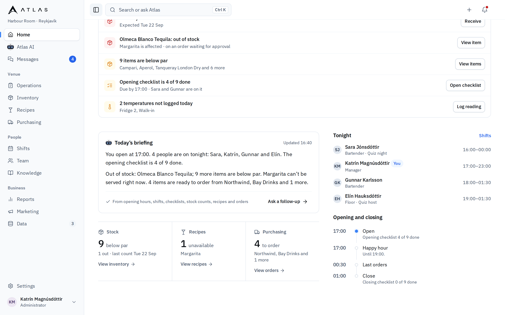
DesktopFurther down Home: the At a glance tiles and the Opening and closing timeline from your saved hours.
Tonight and the day's timeline
- Tonight lists everyone on the published schedule for today, with their role, any note and their times. You are marked You. The Shifts link opens the rota. If the week isn't published yet, managers see "This week isn't published yet."
- Opening and closing is a timeline of the day from your saved hours, with checklist progress, for example "Opening checklist 3 of 8 done" or "Opening checklist done · Sara".
What each role sees
- Administrators and managers see everything described above, including the Purchasing tile and the purchasing sentence in the briefing.
- Bartenders see the same page without purchasing, and with a My next shift tile.
- Viewers see the greeting, today's status and Needs attention only.
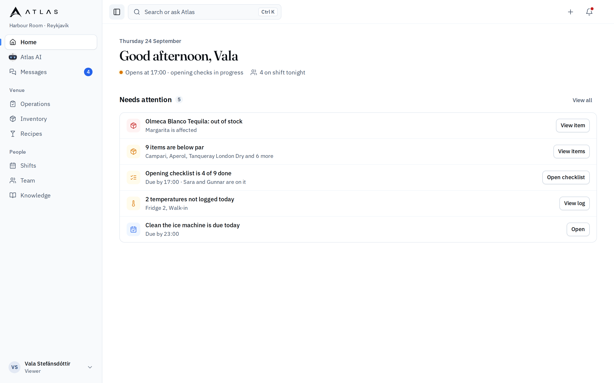
DesktopHome for a viewer: today’s status and Needs attention only. Buttons open records to read, such as View log instead of Log reading.
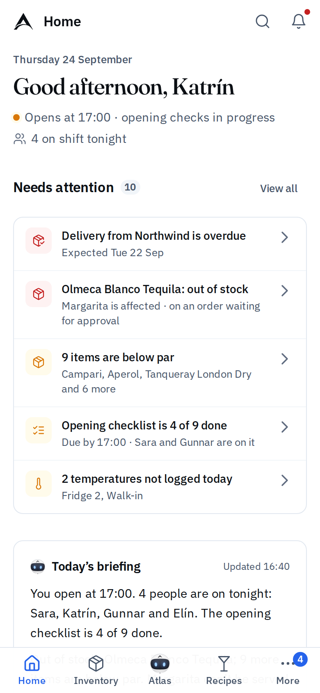
PhoneHome on a manager’s phone keeps the same order.

PhoneA bartender’s Home: tonight’s tasks, without costs or purchasing.
Quick actions
On a computer or tablet, the + Quick actions button in the top bar opens a list of everything you can start from anywhere, grouped as Stock, Purchasing, Service, People, Business and More actions. What's listed depends on your role: for example Log temperature, Write handover, Request time off, New order or Add team member. Type to narrow the list.
Reload data is always there and refreshes what Atlas has loaded.
Recommended morning routine
A calm start to the day
-
Open Home
Read the status line: are you on time for opening, and who is on tonight?
-
Clear Needs attention
Work top to bottom. Each row's button takes you to the right place.
-
Read Today's briefing
Press Ask a follow-up if you want detail, for example what to order.
-
Run the opening checklist
Press Opening checklist and tick items as they're done. Your name and the time are saved.
-
Log fridge temperatures
Use Log reading for any point not logged today.
-
Check Messages
Read the Shift handover from last night and any Announcements.
-
Managers: check stock and orders
Receive deliveries that are due and review any orders or counts waiting for you.
Chapter 5
Atlas AI
Ask a question in plain language, by typing, talking or showing a photo. Atlas answers from your venue's own records, and prepares changes for a person to approve.
Who uses it Administrator Manager Viewer
In the app, Atlas AI is marked with the sparkles icon: in the sidebar, in the middle of the phone tab bar, and on every answer.
What Atlas AI can help with
Stock
What's low, what's out, when an item was last counted, what a barcode or photo is likely to be.
Recipes
What can and can't be made tonight and why. Managers also get cost per serve and margins.
Ordering
For managers: what to order and from whom, order status, cost changes, and whether a delivery matches the order.
Shifts and team
Who is working today or tomorrow, and team profiles.
Operations
Checklist progress, open alerts and today's briefing.
Knowledge
Your venue's procedures and policies, found and summarised.
Atlas AI can also prepare things for you: a stock count, a draft purchase order, a shift draft, a team message or a Knowledge draft. It shows these as cards that a person approves with a tap (see Atlas prepares, people approve below).
Ask Atlas
There are several ways in:
- Atlas AI in the sidebar, or Atlas in the middle of the phone tab bar.
- Type a question in Search or ask Atlas and choose Ask Atlas "…", or press Ctrl ↵.
- Ask a follow-up on Home's briefing.
- Ask Atlas or Ask Atlas about this on an item, a recipe, a Knowledge article, a report or a scan result. The conversation starts with that record attached as context. The context chip above the box shows it; remove the chip if you want a general question.
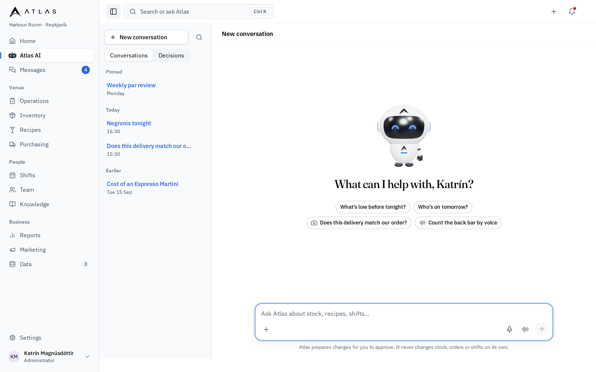
DesktopA new conversation. Suggestions fit your role; earlier conversations stay in the list on the left.
To ask:
- Press New conversation.
- Type in the box Ask Atlas about stock, recipes, shifts…, or tap one of the suggestions.
- Press Send.
While Atlas works you'll see what it is doing, for example "Checking stock…". When it's finished, the steps fold into a short line such as "Checked stock". Press Stop generating to stop; a stopped answer is marked "Stopped. This answer is incomplete."
Suggestions you'll see in Atlas
“What's low before tonight?”
Offered to everyone.
“Who's on tomorrow?”
Offered to everyone.
“Which recipes can't we make tonight?”
Offered to bartenders and viewers.
“Does this delivery match our order?”
Offered to managers; opens the camera or photo picker.
“Count the back bar by voice”
Offered to administrators, managers and bartenders; starts live voice.
“What's on today's checklist?”
Offered to viewers.
Reading an answer
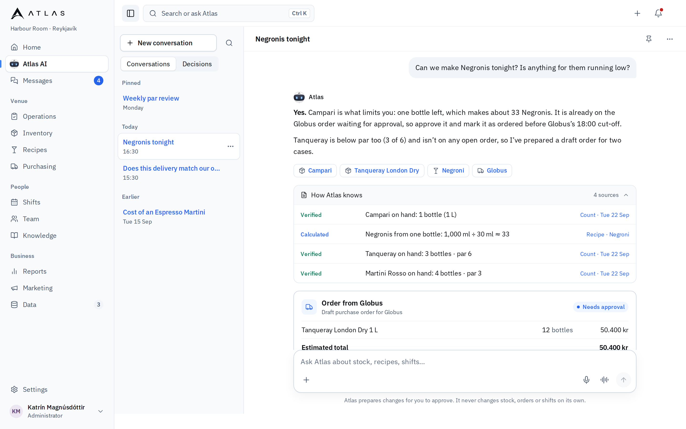
DesktopA conversation: the question, Atlas’s answer with its sources, links to the records it used, and a draft order waiting for approval.
- Marker 1: Conversations and Decisions. Your conversations; managers can also switch to Decisions.
- Marker 2: Linked records. Tap one to open the item, recipe or supplier in Atlas.
- Marker 3: How Atlas knows. Every source behind the answer, and how sure Atlas is of each one.
- Marker 4: A proposal card. Something Atlas has prepared. Nothing happens until a person approves it.
- Marker 5: Attach. Add a photo or a file.
- Marker 6: Voice. Record a voice note, or start a live voice conversation.
- Marker 7: The promise. Atlas prepares changes for you to approve. It never changes stock, orders or shifts on its own.
Every answer can show:
- The answer text, in plain language.
- How Atlas knows: the sources, each labelled by how sure it is.
- Verified: from a verified record, such as a manager-verified count.
- Calculated: worked out from verified records, such as serves per bottle.
- Estimate: a best guess, clearly marked.
- Interpretation: Atlas's reading of something, such as a photo.
- Missing: information Atlas doesn't have. It says so instead of filling the gap.
- Record links to open the item, recipe, order, count, shift or article in Atlas.
- Copy answer, to paste it elsewhere.
If something goes wrong you'll see "Atlas couldn't finish this answer." with "Nothing was changed." and a way to try again.
Conversations
Your conversations are listed on the left (on a phone, tap Conversations at the top). They are grouped as Pinned, Today, Previous 7 days and Earlier. Use Search conversations to find an old one. A conversation with a proposal waiting shows "Waiting for approval".
Conversations are personal: other people can't read yours.
From the … Conversation options menu you can:
- Rename (or click the title),
- Pin / Unpin to keep it at the top,
- Copy link,
- Archive (with Undo),
- Delete. This removes its messages, photos and files. Orders, counts or messages that Atlas already created stay as they are.
Photos and files
Show Atlas a delivery note, a shelf or an invoice and ask about it.
- Press + next to the box.
- Choose Take photo (phones), Choose from library / Choose photo, or Attach file.
- Pick a suggestion such as "Does this match our order?", "Count these bottles" or "What is this?", or type your own question.
- Press Send.
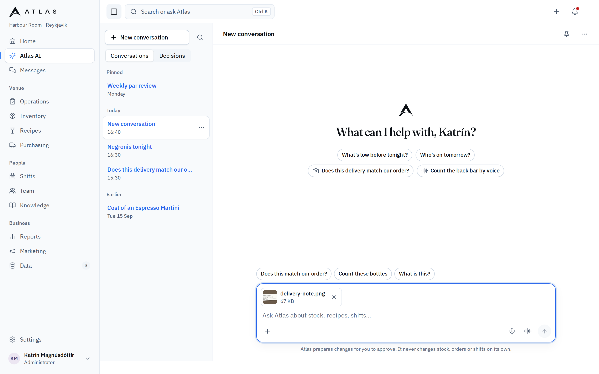
DesktopA delivery-note photo attached, with suggested questions that fit a photo.
Atlas can read photos, PDFs, text and CSV files. Up to 4 files go with one message. Each file can be up to 25 MB, and photos and PDFs in one message up to 20 MB together.
Voice
There are two ways to talk to Atlas. Both appear in the box when your browser supports them.
Voice notes
For a quick question when your hands are busy:
- Press Record a voice note and speak.
- Stop the recording. Atlas shows "Transcribing…", then puts the text in the box: "Transcript ready. Check it, then send."
- Correct anything that was misheard, then press Send.
Your message shows as "Voice note" with its length.
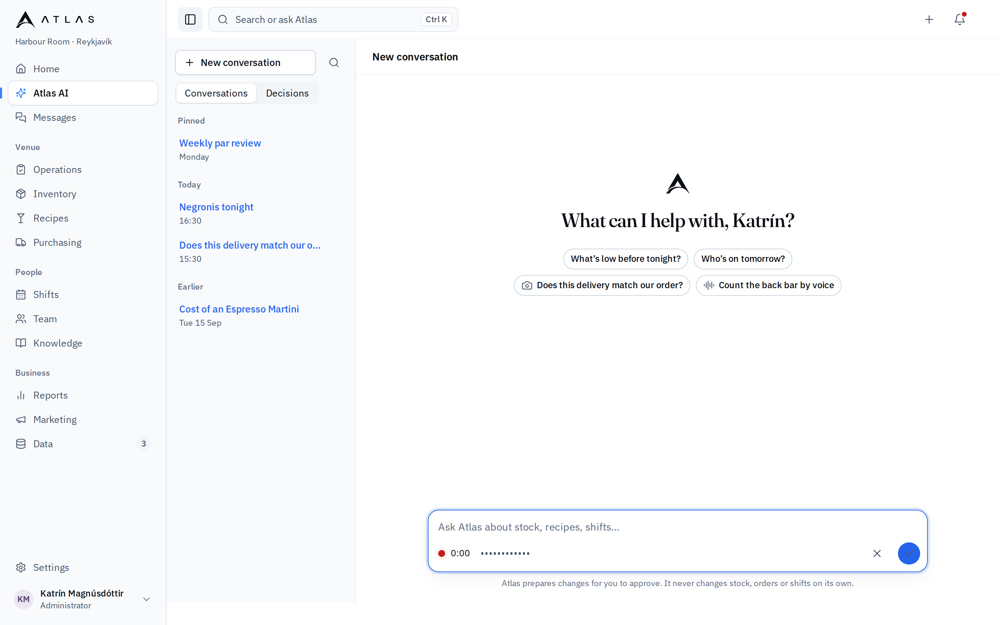
DesktopRecording a voice note. The words appear in the box for you to check before sending.
Live voice
For a spoken, back-and-forth conversation, for example while you count:
- Press Talk to Atlas.
- The first time, Atlas explains how it works: "Atlas listens only while this panel is open. Anything Atlas prepares appears as a card for you to approve with a tap." Press Start talking and allow the microphone.
- Talk normally. The panel shows Listening, Thinking or Speaking.
- Use Mute / Unmute, and Show transcript to read along. End the session when you're done.
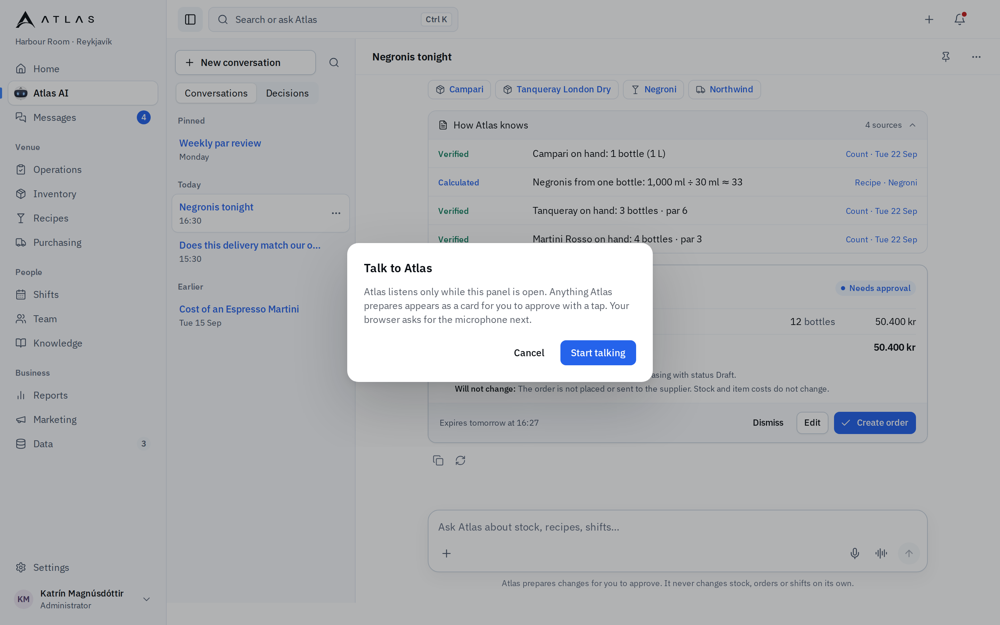
DesktopBefore live voice starts, Atlas explains that it listens only while the panel is open.
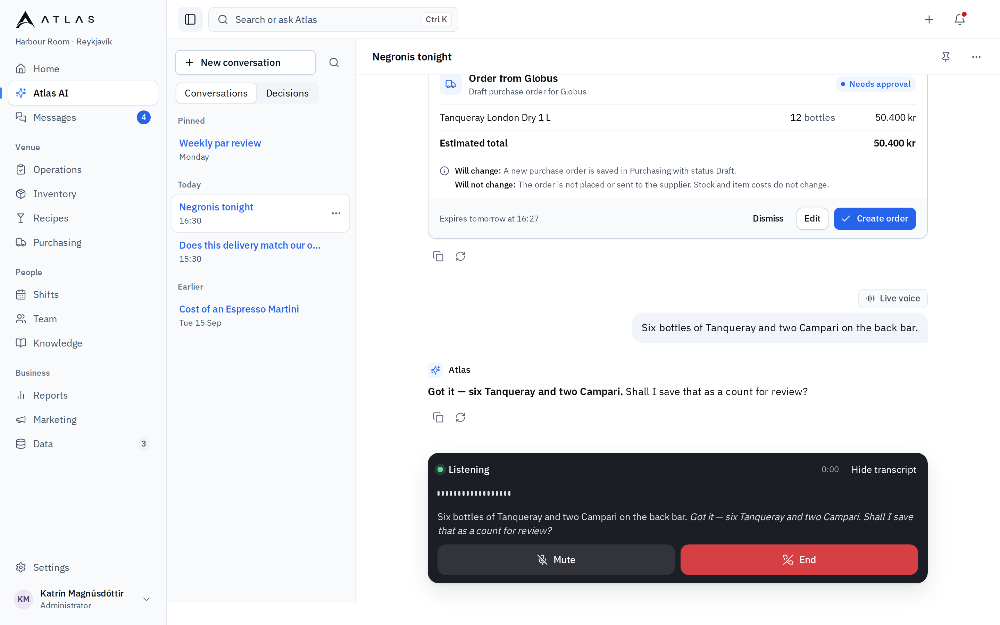
DesktopA live voice session, with the transcript on screen.
A live session runs on one device at a time. If it's still open on another device or tab, press Continue here to move it. If the connection drops, use Reconnect or Try again; your conversation is saved.
During a stock count, Count by voice in the count's … menu opens Atlas AI with the count as context (where live voice is supported).
Atlas prepares, people approve
When you ask Atlas to do something, for example "Order more Campari", it doesn't do it. It prepares a proposal card that shows exactly what would happen:
- the title and a short summary,
- the lines, with quantities, units and prices, and an Estimated total where it applies,
- any warnings or differences,
- Will change and Will not change,
- when it expires: "Expires today at 18:00" or "Expires tomorrow at …".
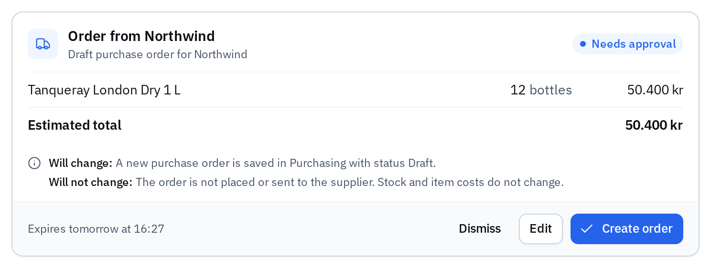
DesktopA proposal card for a draft order. It spells out what will and won’t change, and waits for a tap.
On the card you can:
- press the main button (for example Create order) to approve it,
- press Edit to tell Atlas what to change ("Tell Atlas what to change"),
- press Dismiss to drop it.
When it's done, the card shows a summary and a link such as View order or View count.
| Atlas can prepare | Button | Who can approve |
|---|---|---|
| A new purchase order (created as a Draft) | Create order | Administrators, managers |
| Changes to a draft order | Update draft order | Administrators, managers |
| Receiving a delivery (stock goes up) | Receive delivery | Administrators, managers |
| A stock count, saved for review | Save count for review | Administrators, managers, bartenders |
| A shift draft (not published) | Save as draft | Administrators, managers |
| A team message | Send message | Administrators, managers, bartenders (Announcements: managers) |
| A Knowledge draft (private) | Save as draft | Administrators, managers |
| A new item name, a new item or a wrong-match report | Approve | Administrators, managers, bartenders. This sends a request to a manager; nothing changes until a manager approves it in Data. |
| A settings or par-level suggestion | Open Settings / Open par levels | Administrators, managers. A link only: you make the change yourself. |
If your role can't approve a card, its button is disabled with "Only a manager can approve this.", and the card waits for a manager ("Waiting for a manager"). Managers also see it on Home as "… is waiting for your approval".
Do
- Read Will change and Will not change before you tap.
- Use Edit to adjust quantities in words: "Change the Campari to 4 bottles."
Don’t
- Don't expect a spoken or typed "yes" to count as approval.
- Don't approve a stock count proposal expecting stock to change. It still has to be submitted and verified.
Decisions
Available to Administrator Manager
Decisions is the record of what Atlas suggested, what was decided, by whom, and what happened next. Open it with Decisions at the top of the conversation list.
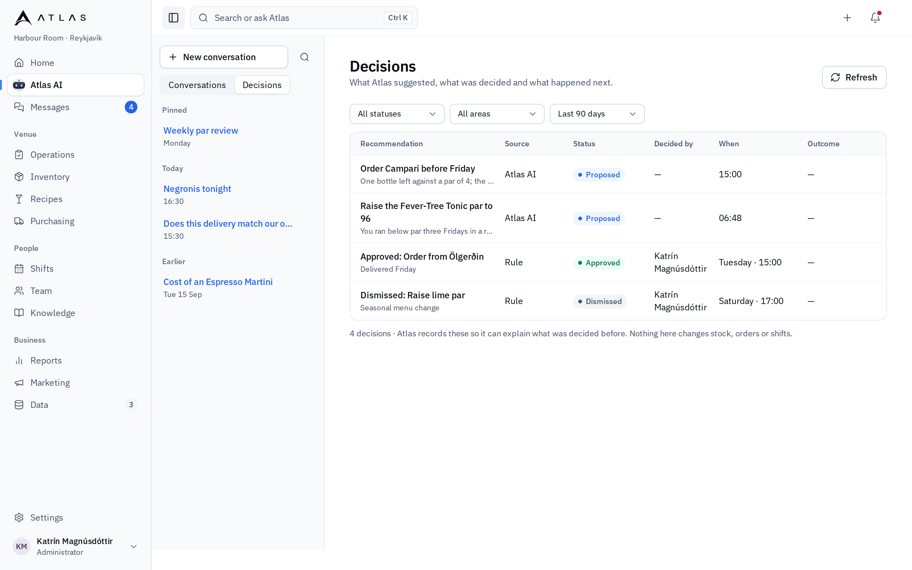
DesktopDecisions: open recommendations and past decisions, with who decided and the outcome.
- Filter by status (Proposed, Approved, Dismissed, Expired, Done), area (Stock, Purchasing, Shifts, Recipes) and period.
- The Source column shows whether a recommendation came from Atlas AI or from a fixed Rule.
- Open a row to see What was recommended, the Evidence, the Decision and the Outcome, with a link to Open the conversation.
- Use Record a decision (Approve, Dismiss or Decide later) and Record what happened to keep the record complete.
Recommendations are refreshed when a manager opens Home. Managers can also link a recommendation into a message in Messages.
When Atlas AI is off
Atlas AI is switched on by an administrator in SettingsAtlas AI. Until then, the page shows "Atlas AI isn't switched on yet".
Search still works, and Atlas still gives quick answers to common questions from your records, labelled "Quick answer". For example "What is low in stock?", "What needs ordering?", "Can we make a Margarita?" or "Who works tomorrow?". Photos and files need Atlas AI to be on.
Daily limits
To keep things fair and fast, each person has a daily allowance. Your venue can change these in SettingsAtlas AI. The usual amounts are:
- about 200 questions a day,
- 20 live voice sessions and 60 minutes of live voice a day,
- 100 files a day.
If you reach a limit, Atlas tells you in plain words, for example "You've used today's live voice sessions. Voice notes and text still work." Limits reset within 24 hours. If you ask a lot in a short time, Atlas may ask you to wait a minute.
Photos and files are kept for 30 days by default. Voice recordings are deleted once they have been written down, unless your venue chooses otherwise.
What Atlas AI will never do
- Make a change without a person tapping approve.
- Invent stock, costs, sales, item names or barcodes. Missing information is shown as Missing.
- Send anything to a supplier or post to social media.
- Change settings, par levels, roles or recipes directly. It can only suggest and link.
- Show you anything your role isn't allowed to see.
Chapter 6
Messages
The team's shared channels for everyday updates, shift handovers and official announcements, with names, photos and read receipts.
Who uses it Administrator Manager Viewer
Channels
Messages has five channels, shared by the whole active team:
| Channel | What it's for |
|---|---|
| General | Everyday team communication and shared updates. |
| Operations | Cleaning, inventory, maintenance and service operations. |
| Shift handover | What the next shift needs to know before taking over. |
| Announcements | Official management notices for the whole active team. Only managers post here. |
| Marketing | Content ideas, campaigns, events and social-media coordination. |
The list on the left shows each channel with the last message ("Sara: …"), the time and a blue badge for unread messages. Use Search conversations to find a channel. Pin the ones you use most with the pin button at the top of the thread; they move to Pinned (just for you).
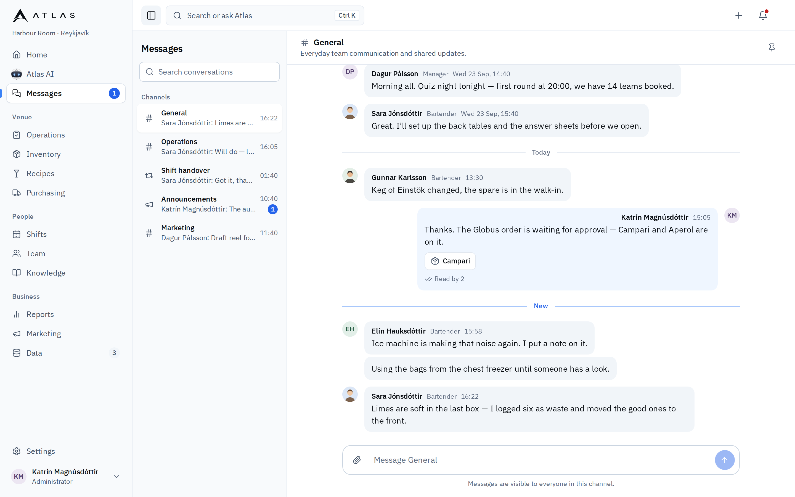
DesktopThe General channel: channels with unread counts on the left, each message with its sender’s name and photo, and a line where new messages start.
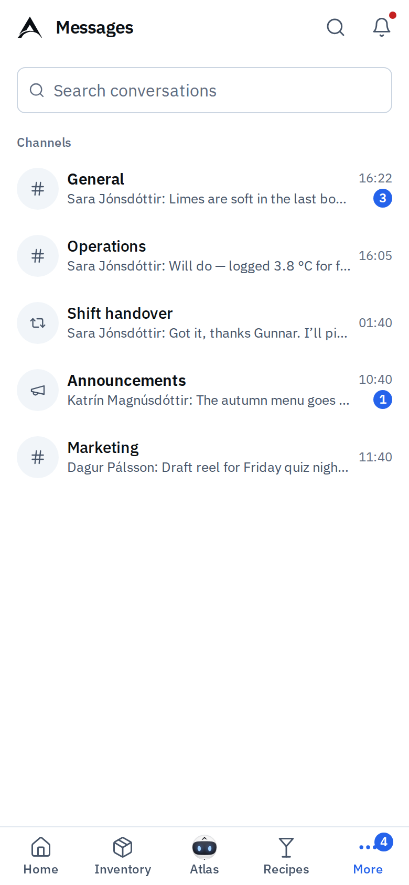
PhoneOn a phone, Messages opens on the channel list.
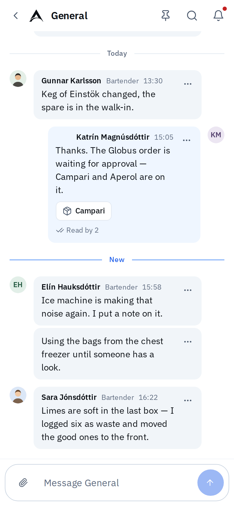
PhoneA thread on a phone: your messages on the right, everyone else’s on the left.
Names and photos
Every message shows who sent it: their photo (or initials), their name and their role, for example "Manager". The name is the one set on the person's profile in Team (Name shown in Atlas), so if someone changes their preferred name, their messages show the new name. Someone who has left is marked "· no longer active". An email address is never shown as a name.
Messages that Atlas posts, such as a newly published required reading, come from Atlas.
Sending a message
- Open a channel.
- Type in the box Message (channel).
- Press Send, or Enter on a keyboard (Shift + Enter for a new line).
Your message appears straight away. Everyone in the channel can see it. If it doesn't go through, it is marked Not sent with Retry.
Link a record
Point the team to something in Atlas instead of describing it:
- Press the paperclip, Link a record.
- Choose Item, Checklist or Shift. Managers can also link a Recommendation from Atlas AI Decisions.
- Search, choose the record and press Attach.
- Send your message. The record appears as a chip anyone can tap to open.
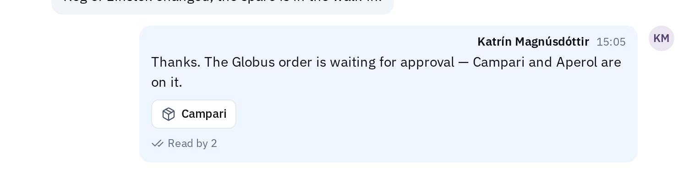
DesktopA message with a linked inventory item. “Read by” counts how many people have seen it.
Messages carry text and linked Atlas records. Photos and files can't be attached to a message in this release.
Handover notes
At the end of a shift, write a structured note for the next team:
- Open Shift handover and press Write handover. (It's also in Shifts, and in Quick actions.)
- Fill in What happened, and if needed Stock issues and For the next shift. At least one section is required.
- Press Post handover.
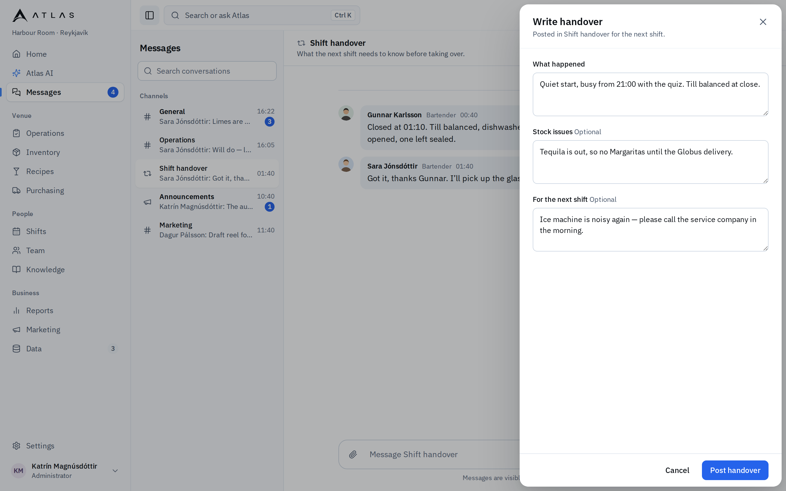
DesktopWrite handover posts a short, structured note in Shift handover for the next team.
Announcements
Use Announcements for official notices everyone should see. Only managers can post; bartenders see "Only managers can post in Announcements. You can read everything here."
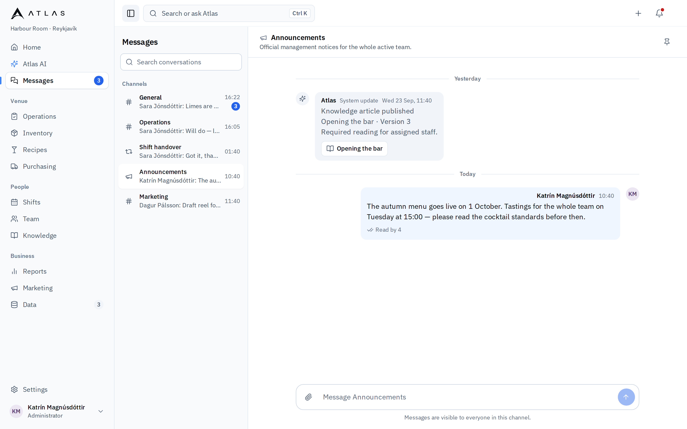
DesktopAnnouncements: official notices from managers, and notices from Atlas such as newly published required reading.
Unread messages and read receipts
- Unread counts show on Messages in the sidebar, on the phone's More tab and next to each channel.
- Inside a channel, a New line marks where unread messages start, and a button jumps to "N new messages".
- Opening a channel marks it as read.
- Read receipts appear on your own messages only: Sent until someone reads it, then Read by N. Hover to see the names.
- The notifications bell (and Home's feed) gets one entry per channel with unread messages, for example "Gunnar Karlsson in Shift handover" or "3 new messages in General". It shows the sender's current name.
Editing and removing messages
- You can edit or delete your own message within 15 minutes of sending it. Use Edit or Delete on the message (on a phone, through Message options).
- A deleted message is replaced by "Message deleted" for everyone. A record is kept in the history.
- Managers can remove any message at any time, and must give a Reason, which is kept in the history.
Chapter 7
Operations
Today's shared opening and closing checklists, routines and the fridge and freezer temperature log, each tick saved with who did it and when.
Who uses it Administrator Manager Viewer
The Today tab
Operations opens on Today: the business date and how many checklists are done, then one row for each checklist or routine that's due today.
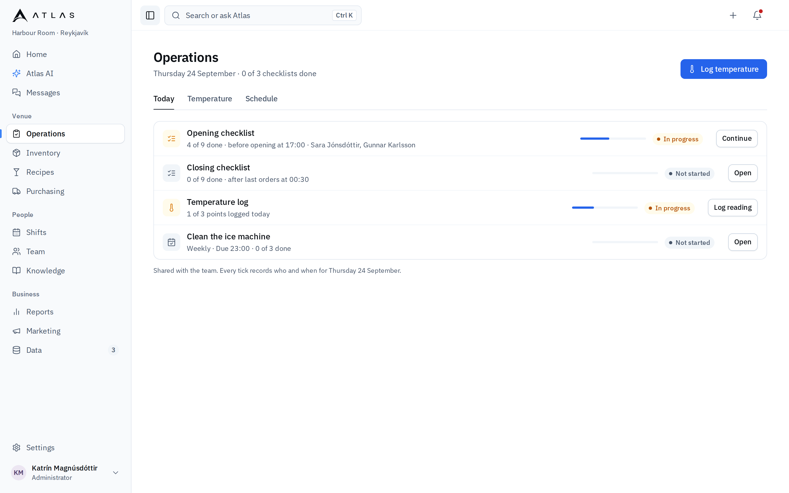
DesktopToday’s checklists and routines, each with its status and progress.
- Opening checklist and Closing checklist show when they're due ("after last orders at …"), progress, or "completed … by (name)".
- Other routines show "Due … · N of M done".
- Temperature log shows how many points are logged today and any readings out of range.
- Status pills: Not started, In progress, Done, Skipped, Overdue.
Press Open, Continue or View on a row.
Checklists are shared: "Shared with the team. Every tick records who and when." Nothing is kept on one device.
Working through a checklist
Available to Administrator Manager
- Open Operations (or press Opening checklist on Home) and press Open on the checklist.
- Tap each item as you do it. It is saved straight away, with your name and the time.
- To add detail, press Add note. Notes are "Visible to the team with your name." Leave a note empty to remove it.
- When you're finished, press Complete checklist. Add an optional note, then confirm.
If some items aren't ticked, Atlas asks "N items aren't ticked. Complete anyway?". The unticked items stay visible in the history as not done.
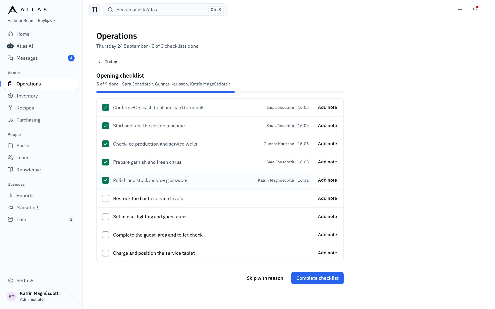
DesktopThe opening checklist in progress. Each ticked item shows who ticked it and when, and progress moves on.
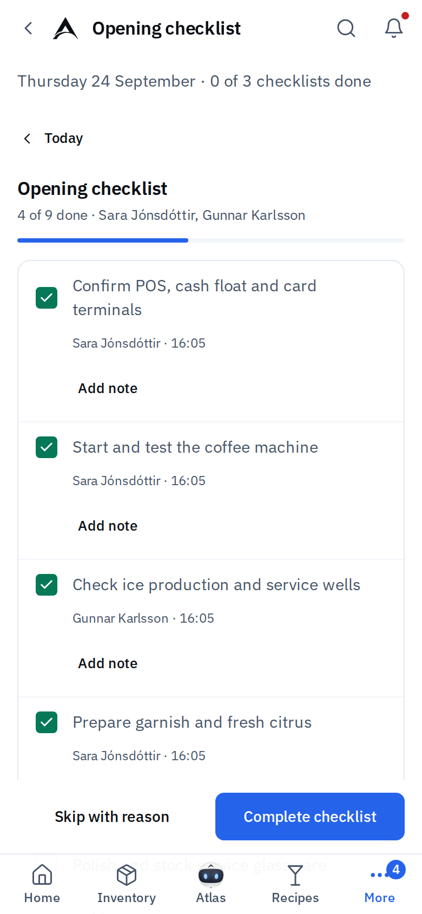
PhoneTick items on your phone as you go.
Managers can also press Skip with reason. The reason is required and kept in the history with the manager's name.
Temperature log
The Temperature tab lists each fridge and freezer point with its Target range, today's reading, who logged it and when, and a status: In range, Out of range, Logged or Not logged.
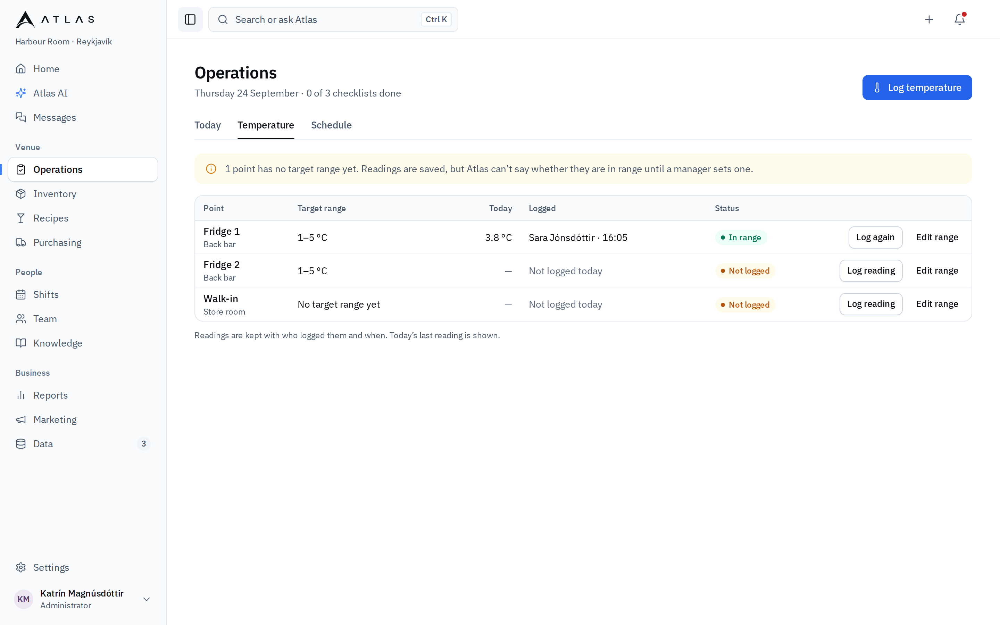
DesktopThe temperature log: which points are logged today, who logged them, and any reading outside its target range.
To log a reading:
- Press Log temperature at the top, or Log reading on a point.
- Choose the Point and enter the Temperature (°C).
- If the reading is outside the target range, Atlas asks what you did about it. What you did is required.
- Press Save reading.
Managers set or change a point's range with Edit range. Atlas never invents food-safety limits: leave a value empty if there isn't one. Until a range is set, readings are saved but Atlas can't say whether they're in range.
Schedule
Available to Administrator Manager
The Schedule tab lists the routines, with the days they run, when they're due, who does them (for example "Anyone on shift") and whether they're Active or Paused. Press Edit to change a routine's name, days, Available from, Due by and Who does it. Changing the schedule never deletes past checklists.
On Home
Operations adds rows to Needs attention: a checklist that isn't started or isn't finished, a routine that is due or overdue, a reading out of range, or temperatures not logged today, each with a button to open it.
Chapter 8
Inventory
Every item the bar stocks, with its verified stock, par level, status and cost. It's the starting point for counts, waste and item changes.
Who uses it Administrator Manager Viewer
The Items list
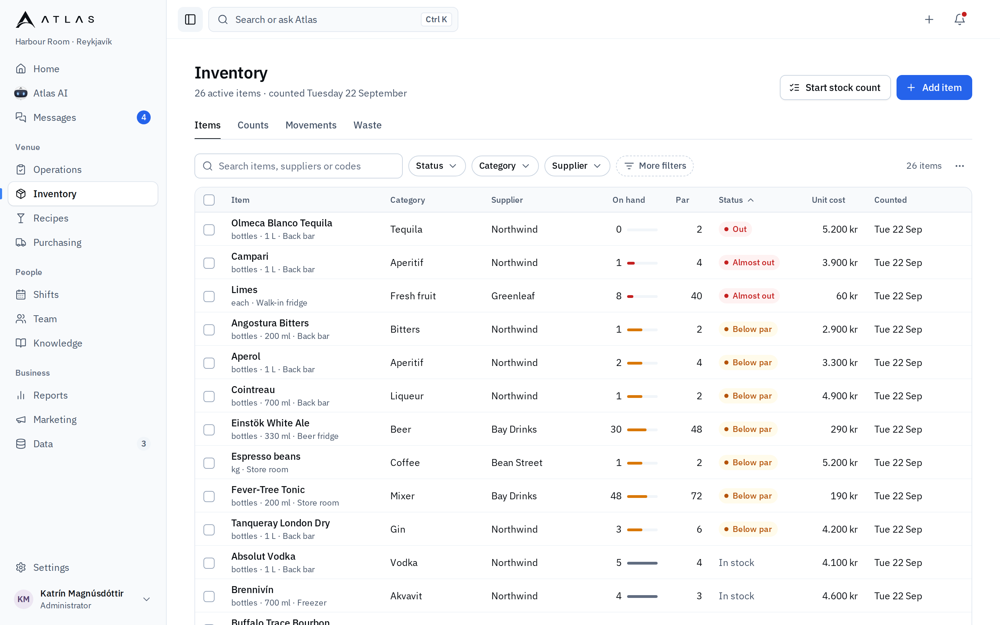
DesktopThe Items list: what’s on hand against par, with out, almost out and below-par items sorted to the top.
- Marker 1: Start stock count, and Add item for managers.
- Marker 2: Tabs. Items and Counts for everyone; Movements and Waste for managers.
- Marker 3: Search by item name, supplier or code.
- Marker 4: Filters: Status, Category, Type, Supplier (managers) and More filters.
- Marker 5: More inventory actions: Identify item, and for managers Add product by camera and Download as CSV.
- Marker 6: On hand: verified stock, with a bar showing it against par.
- Marker 7: Status: Out, Almost out, Below par, Not counted or In stock.
The subtitle tells you how many active items there are and when stock was last counted, for example "26 active items · counted Tuesday 22 September".
Columns: Item (with unit, pack and location), Category, Supplier (managers), On hand, Par, Status, Unit cost (managers) and Counted. Click a column heading to sort.
At the foot of the list: "Quantities are from the last verified count plus recorded movements."
Download as CSV. Managers can choose Download as CSV from the … menu for a spreadsheet of the list: item, category, supplier, on hand, unit, par, status, unit cost and last counted.

PhoneOn a phone, each row shows the item, its quantity against par and its status.
Search and filters
- Search items, suppliers or codes finds items by name, supplier, barcode or SKU.
- Status: Below par, Out or almost out, Not counted.
- Category: Spirits, Wine, Beer, Mixers, Syrups, Bitters, Fresh fruit, Fresh herbs, Garnish, Bar ingredients, Consumables, Bar equipment, Coffee, Other, each with a count.
- Type: the kind within a category (Wine is always Red, White, Rosé or Sparkling).
- Supplier (managers).
- More filters: location, and Active items, Inactive items or All items.
When filters hide items, Atlas says how many, with Clear filters.
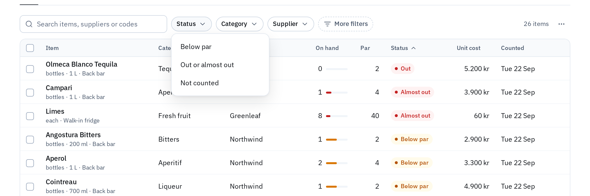
DesktopThe Status filter: show only items that are below par, out or almost out, or not counted.
Status
| Status | What it means |
|---|---|
| Out | Verified stock is 0. |
| Almost out | At or under a quarter of par. It also counts as below par. |
| Below par | Verified stock is under the par level. An item exactly at par isn't below par. |
| In stock | Counted, and not below par. |
| Not counted | No current verified count. On hand shows "—", never 0. |
| Unknown | Stock couldn't be loaded, so Atlas shows no numbers at all rather than partial ones. |
| Inactive | Kept for history, out of counts, orders and search. |
An item can also show Recount due when its count is getting old.
Live stock, imported quantities and stock-count evidence
This is the most important idea in Inventory. Atlas keeps three kinds of number apart.
Where your stock numbers come from. Only a count that a manager has verified, plus the movements recorded since, becomes live stock.
- Live stock is what Atlas treats as on hand now: the last verified count plus every recorded movement since, such as deliveries received and waste recorded. This is the number in On hand, and the one Home, Recipes, Purchasing, Reports and Atlas AI all use.
- Stock-count evidence is what your team counted on the shelf, with who counted and when. It becomes live stock only when a manager verifies the count (Chapter 9).
- Imported quantities are numbers that came in from a file or another system, for example an old spreadsheet.
A few rules follow from this:
- Not counted is not zero. An item that has never been verified shows Not counted, and recipes that use it can't be shown as available.
- Verified counts expire. A verified count is used for a set number of days (usually 7). After that the item goes back to Not counted until it is counted again.
- No partial numbers. If counts or movements can't be loaded, all stock shows as Unknown with "Stock figures are incomplete". Press Try again. Nothing was changed.
- Selling doesn't lower stock. No till system is connected, so drinks sold don't reduce stock. That's why regular counts matter.
There is no "adjust stock" or "set quantity" button in Inventory. Stock changes only through:
- a verified stock count,
- waste recorded by a manager,
- deliveries received in Purchasing.
Item details
Click an item (or tap it on a phone) to open its details.
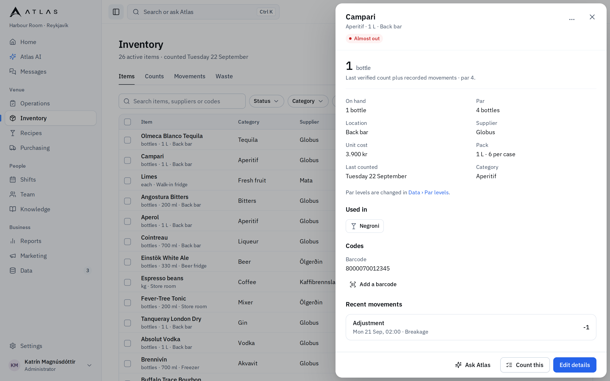
DesktopItem details for Campari: stock on hand against par, supplier, cost, location, the recipes that use it, codes and recent movements.
- Marker 1: Status, plus Recount due when the count is getting old.
- Marker 2: On hand in large type, and where the number comes from.
- Marker 3: Par levels are changed in Data › Par levels. (Shown to managers.)
- Marker 4: Used in: the recipes that use this item.
- Marker 5: Ask Atlas, Count this and, for managers, Edit details.
The details show On hand, Par ("Not set" if there isn't one), Location, Supplier and Unit cost (managers), Pack, Last counted ("Never") and Category. Below that:
- Used in: recipe chips, or "Not used in any recipe."
- Codes: Barcode, SKU and (managers) Supplier number. Managers can Add a barcode; bartenders can Suggest a barcode for a manager to approve.
- Recent movements: the last 10 stock changes, with type, date, note and quantity.
- Counts: the counts this item has been part of.
The … menu has Edit details, Add to an order, Record waste, Ask Atlas about this and Deactivate (managers).
Units, pack and supplier
- Counted in is the unit you count in: bottles, cans, each, kg, g, litres, ml, cases, boxes, bags, packs, jars or kegs.
- Unit size and Units per case describe the pack, for example "1 L · 6 per case". With these set, a count can be entered in bottles, cases or litres and Atlas works out the rest.
- Supplier links the item to one of your suppliers. An item without a supplier can't go on a suggested order.
- Cost per unit (kr) is used for recipe costs and stock value. By default, receiving a delivery updates it to the delivery's cost.
Par levels
The par level is "the quantity you want on hand after a delivery". Items under par are flagged Below par and suggested for ordering.
Adding and editing items
Available to Administrator Manager
Add an item
- Press Add item. New items start as Not counted.
- Enter the Name (required), Category and Counted in.
- Optionally fill in Product details: Brand, Variant or flavour, Unit size, Units per case and Package.
- Under Stock and cost, choose the Supplier, and enter Cost per unit, Par level (optional) and Location.
- Under Codes and other names, add a Barcode, SKU or supplier number, or Also known as (names the team or suppliers use).
- Press Add item.
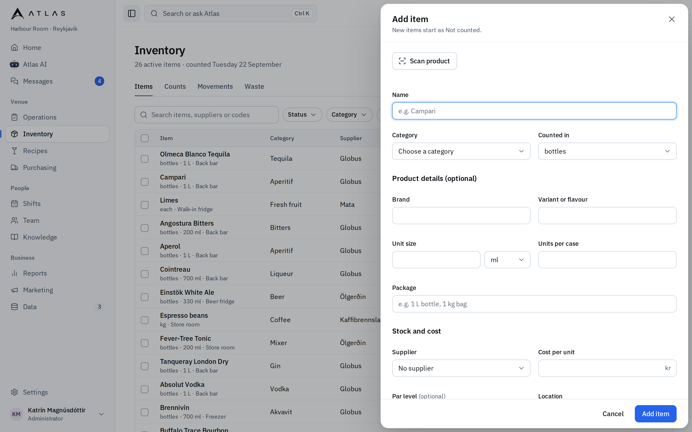
DesktopAdd item. Atlas checks for likely duplicates before the item is created.
Duplicate check. Atlas compares the new item with existing ones. If it finds Possible existing matches, choose Use existing item, or explain "Why is it different from …?" (for example "Different size: 70 cl vs 1 L") and press Create anyway. Some clashes, such as a code already in use, can't be created at all.
From a photo. Scan product in the Add item sheet (or Add product by camera in the … menu) reads the front label and fills in a Review draft. Check every field: readings Atlas wasn't sure about are left empty, and nothing is saved until you add the item.
Edit an item
- Open the item and press Edit details.
- Change the name, category, unit, pack, Supplier, Location, Cost per unit, Case cost, Minimum order or Lead time (days).
- Press Save changes.
Changes are recorded with your name. Editing never changes stock, and par isn't edited here.
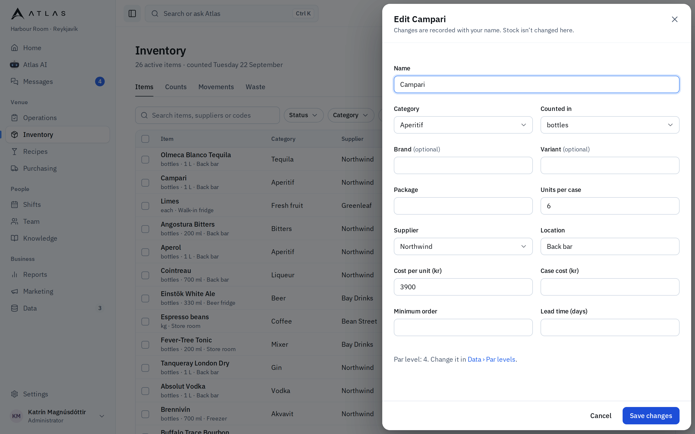
DesktopEdit details: name, category, unit, supplier, cost and ordering details. Par and stock aren’t changed here.
Waste
Available to Administrator Manager
Record anything lost, so stock and reports stay accurate. Waste lowers stock straight away and is kept in the movement history.
- Press Record waste (on the Waste tab, or in an item's … menu).
- Choose the Item. Only counted items with stock can be recorded as waste.
- Enter the Quantity (up to what's on hand).
- Choose a Reason: Spoilage, Breakage, Spill, Expired, Preparation waste or Other.
- Write a Note (required): what happened and where.
- Press Record waste.
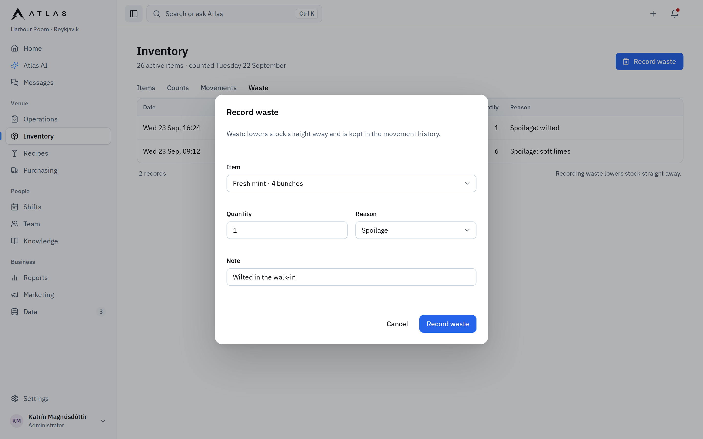
DesktopRecord waste with a reason and a note. Stock goes down straight away.
If Atlas says "Waste may not have been recorded", open Movements and check before trying again, so nothing is recorded twice.
The Waste tab lists only waste you record. Atlas never treats other adjustments as waste.
Deliveries and movements
Deliveries are received in Purchasing (Chapter 11). Receiving raises stock straight away.
The Movements tab (managers) is the history of every stock change, newest first: Restock, Waste, Adjustment, Count, Sale and Transfer, with date, item, change and note. Search by item or note and filter by type.
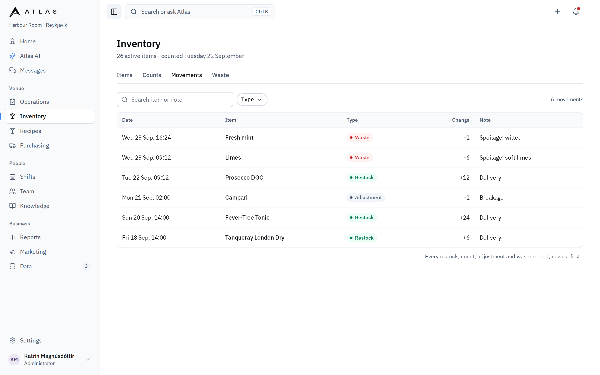
DesktopMovements: every recorded stock change between counts, newest first.
Identify an item with the camera
Anyone can use Identify item to find out which item a bottle is:
- Tap the scan icon in the phone top bar, or choose Identify item from the … menu.
- Point the camera at the product or its barcode, or use Upload photo or Type code.
- Atlas shows its Likely match and how sure it is (Sure, Check, Not sure or Not read), with the verified stock.
- Choose Open item, Count item, View recipes or Ask Atlas, or Wrong product if it's wrong.
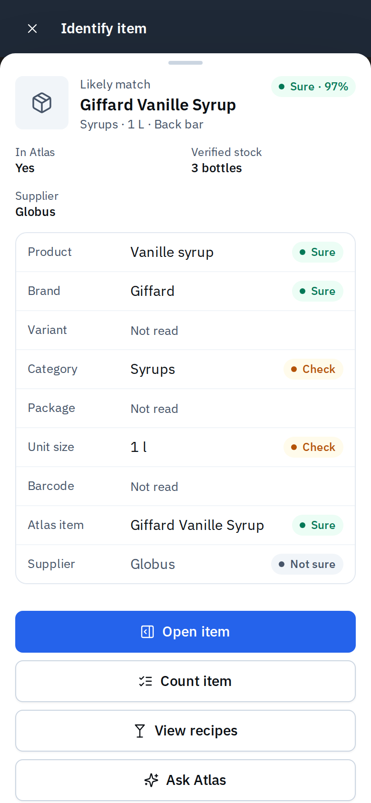
PhoneIdentify item recognised a syrup bottle. Identifying never changes stock or items.
Identifying never changes stock or items. If Atlas can't tell, it says so and offers to search, show possible matches, or create a new product draft for a manager to check. If photo recognition isn't set up for your venue, scan the barcode or search instead.
Deactivating and reactivating
Available to Administrator Manager
Items are never deleted. When you stop stocking something, deactivate it: it leaves counts, ordering and search, and its history and recipe links are kept.
- Open the item's … menu and choose Deactivate.
- Atlas checks what depends on the item first.
- It can't be deactivated yet if it is on an open purchase order ("Receive or cancel it first.").
- Check before you continue warns you, for example if active recipes use it ("Those recipes will show it as unavailable.").
- Add an optional Reason and press Deactivate.
To bring it back, open it (filter Inactive items) and press Reactivate. It comes back into counts, orders and recipes, and its history is unchanged.
Chapter 9
Stock count
Count what is physically on the shelf, one item at a time. When a manager verifies the count, it becomes the stock Atlas shows.
Who uses it Administrator Manager
The four steps of a stock count
-
Start
Choose the whole bar, one area or one category.
-
Count
Enter what's on the shelf, item by item. Pause and continue on any device.
-
Review
Check anything not counted or very different, then submit.
-
Verify
A manager checks the differences and verifies. Only now does stock update.
The Counts tab
Open InventoryCounts. Choose In progress, Verified or All. Each count shows its area, status, who counted, how many items are done ("X of Y"), the differences and the date.
| Count status | Meaning |
|---|---|
| In progress | Being counted. |
| Needs review | Submitted, waiting for a manager. |
| Verified | Checked by a manager. It is now the stock Atlas shows. |
| Sent back | A manager asked for corrections. |
| Cancelled | Stopped. Nothing it counted changed stock. |
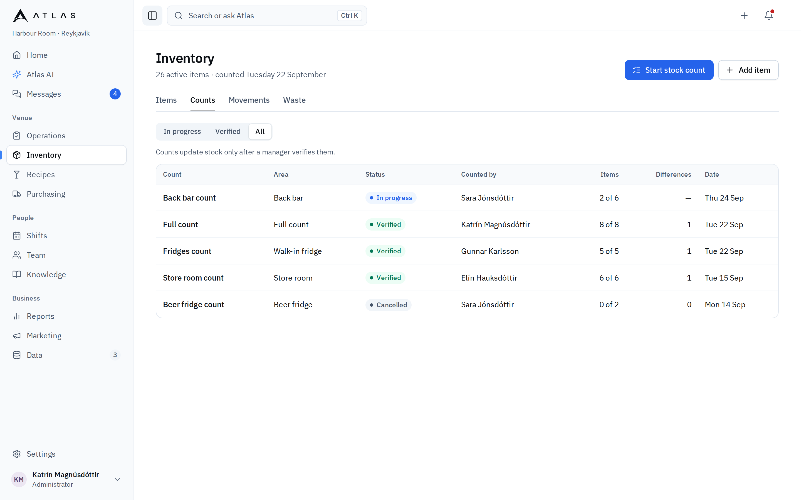
DesktopThe Counts tab with All selected: the count in progress, earlier verified counts and a cancelled one. Stock changes only after a manager verifies.
1. Start a count
- Press Start stock count (on Inventory, Home or in Quick actions).
- Under What are you counting?, choose Full count, an Area (such as the back bar) or a Category. Each option shows how many items it covers.
- Optionally give it a Name, such as "Back bar count".
- Press Start count.
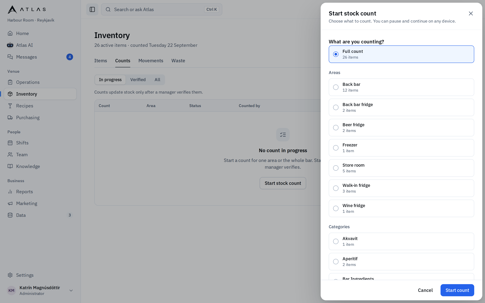
DesktopStart stock count: count the whole bar, or one area or category at a time.
2. Count
The count shows one item at a time, made for counting at the shelf.

PhoneCounting on a phone: one item at a time, with large buttons and the next items below.
- Marker 1: Progress: how many are counted, and who started the count.
- Marker 2: Pause, and the … menu with more options.
- Marker 3: Last verified quantity and the par level, for reference.
- Marker 4: One less / one more, or type the number.
- Marker 5: Part bottles: add a quarter, half or three quarters.
- Marker 6: Skip or Open item.
- Marker 7: Scan item and Save and next.
For each item:
- Count what's on the shelf. Use the number, One less / One more, or the part-bottle buttons + ¼, + ½, + ¾. Where the pack size allows, you can switch the unit, for example to cases or litres.
- Press Save and next. Atlas confirms "Saved … " with Undo, and moves on.
- If you can't count an item, press Skip and give a Reason (for example "Couldn't reach it"). A manager sees the reason.
If an item was already saved, the card says "Saved N by (name). Saving again replaces it."
Scan instead of searching. Press Scan item and point the camera at the barcode or bottle. Atlas uses a match only after you confirm it ("Nothing is counted until you save"). If the item isn't in this count you can Add to this count. If it was counted earlier, choose Add more or Replace. Rapid scan in the … menu keeps the camera open between items.
See everything. Show all items lists the whole count with Not counted, Counted and All filters. On a computer, the List view lets you count row by row; changes save as you move to the next row.
Count by voice. Where live voice is supported, Count by voice in the … menu opens Atlas AI with the count as context.
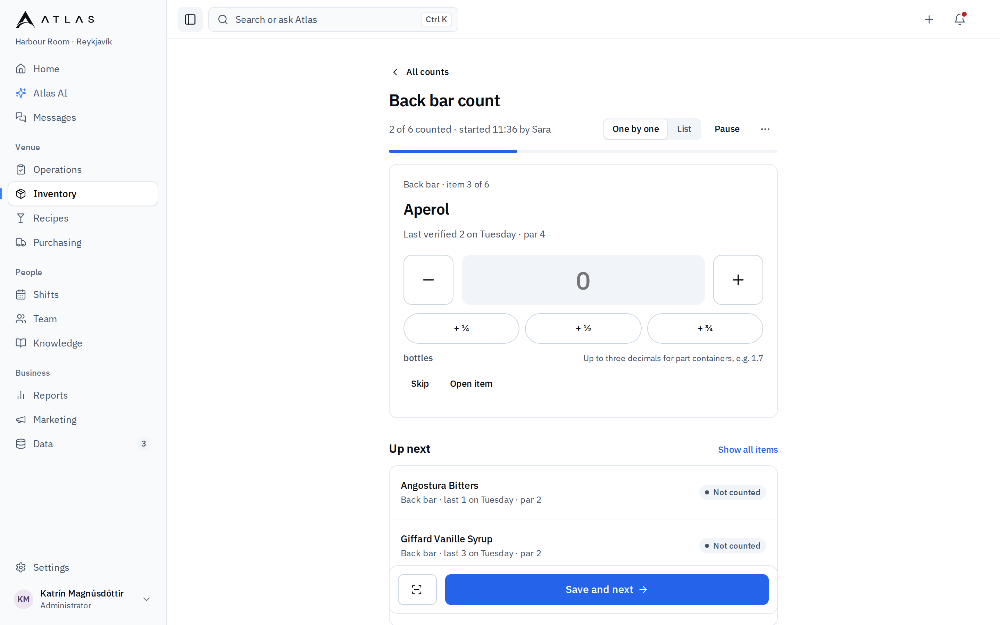
DesktopCounting the back bar on a computer: 2 of 6 counted, entering the next quantity.
Pause at any time. Atlas shows "(Count) paused · X of Y counted". Continue later from Continue on Home or from the Counts tab, on any device.
3. Review and submit
- Press Finish count in the … menu.
- Atlas shows what's Counted, Skipped and Not counted yet, and any Big differences: items more than 10% away from the last verified count (your venue may set a different figure). Use Count now or Recount to fix them.
- Press Submit for verification. It's available once every item is counted or skipped.
- Confirm. After you submit you can't change the count.
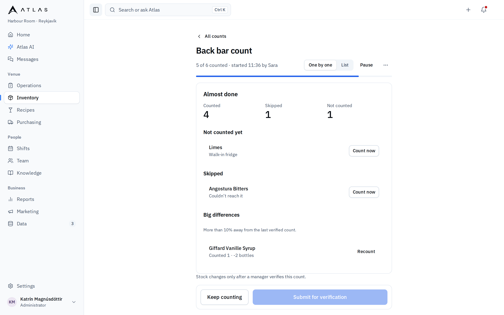
DesktopFinishing a count: what’s counted, skipped or not counted yet, and big differences to recount before submitting.
Managers now see "(Count) is waiting for verification" on Home, with Review.
4. Verify
Available to Administrator Manager
- Open the count from Home (Review) or from the Counts tab.
- Check each line: Last verified, Counted and the Difference ("No difference", "No earlier count", or plus or minus a number).
- Press Verify count and confirm. Atlas shows "Count verified".
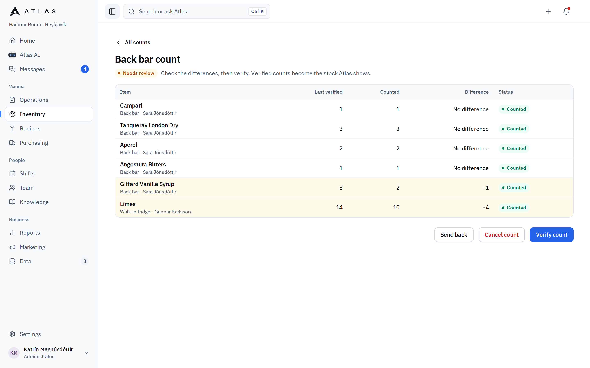
DesktopA submitted count waiting for a manager. Differences are highlighted; Verify count makes it the stock Atlas shows.
If stock moved during the count, for example a delivery was received while you counted, Atlas shows "Stock changed during this count". Each counted quantity is kept as the stock at the moment it was counted, and anything recorded after that is added on top, so nothing is erased. You can press Verify anyway.
If something is wrong, press Send back and say What needs fixing?. The team can correct it and submit again.
To stop a count, press Cancel count. Nothing counted so far changes stock; the count is kept as cancelled. A manager can cancel any count; the person who started a count can cancel their own.
Who can count
- Administrators and managers can start, count, submit, verify, send back and cancel.
- Bartenders can start, count, submit and cancel their own counts, unless starting or submitting has been switched off for staff at your venue.
- Viewers can't count: "Counting is for bar staff and managers."
Do
- Count what's physically on the shelf, not what you expect to be there.
- Skip with a reason rather than guessing.
- Verify counts promptly, so stock stays fresh.
Don’t
- Don't copy last week's numbers.
- Don't worry about verifying while deliveries come in. Later movements are added on top.
Chapter 10
Recipes
The drinks and food you serve, each linked to inventory items, so Atlas can tell you what can be served tonight and, for managers, what each serve costs.
Who uses it Administrator Manager Viewer
The recipe gallery
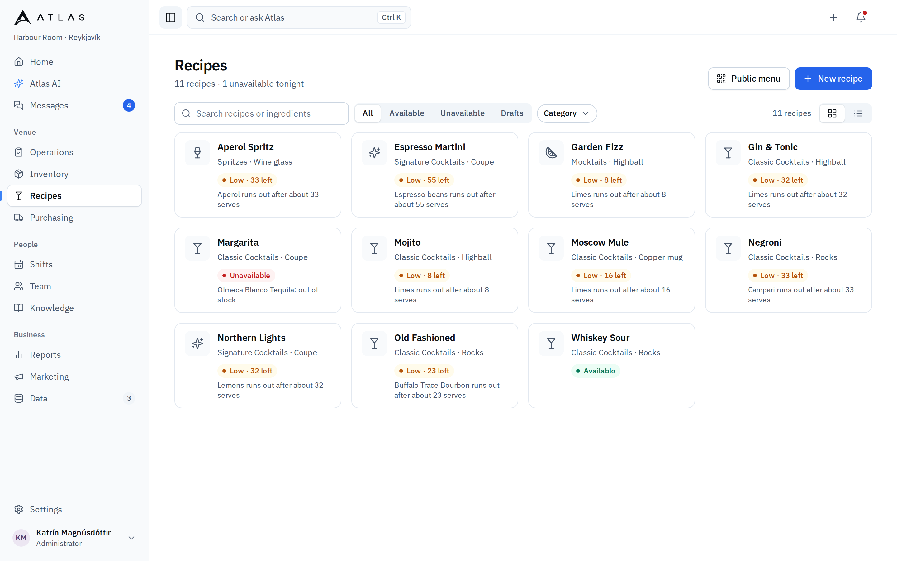
DesktopThe recipe gallery: every recipe with whether it can be served tonight, based on verified stock.
The subtitle shows how many recipes you have and how many are unavailable tonight.
- Search recipes or ingredients looks through names, categories, glassware and ingredients.
- Filter with All, Available or Unavailable (managers also see Drafts), and the Category menu.
- Switch between Grid and List. In the list, managers also see Cost, Price and Margin.
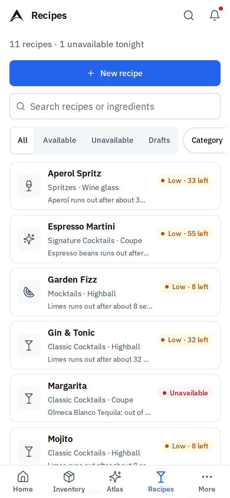
PhoneBehind the bar, open Recipes from the tab bar to check a spec or what’s unavailable.
Availability
Atlas works out availability from the verified stock of each linked ingredient:
| Pill | What it means |
|---|---|
| Available | Every ingredient is counted and in stock. |
| Low · N left | Fewer than 12 serves left, or an ingredient is below par. |
| Unavailable | An ingredient is out, for example "Olmeca Blanco Tequila: out of stock". |
| Not counted / Setup incomplete | Atlas can't check yet: an ingredient isn't counted, isn't linked to an item, or its unit or pack size doesn't match. The line underneath says which. |
| Draft | Archived: off service and off the menu. |
A recipe is never shown as available on a guess. Open it and look at Why availability is unknown to see exactly what's missing.
A recipe
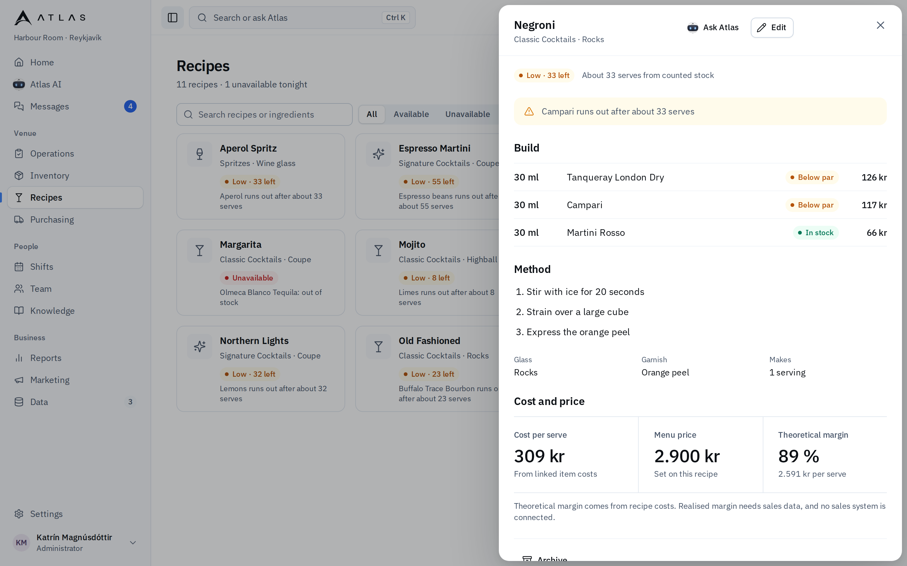
DesktopThe Negroni: availability, the build with each ingredient linked to stock, method, glass and garnish, and, for managers, cost and margin.
Each recipe shows:
- Availability, with how many serves you can make: "About N serves from counted stock", "None tonight", or "Unknown until every ingredient is counted and linked".
- Build: each ingredient with its quantity, the inventory item it uses and that item's stock (In stock, Below par, Out, Not counted, Not linked). Tap an ingredient to open the item.
- Method: numbered steps.
- Glass, Garnish, Makes and Notes.
- For managers, Cost and price: Cost per serve, Menu price and Theoretical margin.
Bartenders and viewers see everything except the cost, price and margin.
Press Ask Atlas to ask about the recipe. While a recipe is open, Atlas keeps your phone's screen awake where the phone allows it.
Creating and editing recipes
Available to Administrator Manager
- Press New recipe (or Edit on a recipe).
- Details: the Name, Category and an optional Photo (JPEG, PNG or WebP, up to 10 MB).
- Ingredients: search for an item, choose it, enter the Quantity and Unit, and press Add. Link every ingredient to an item so availability and cost stay current.
- Method: one step per line. They show numbered at the bar.
- Service: Glass, Garnish, Makes, Notes, and the boxes On service and Show on the public menu.
- Price: the Menu price. Atlas shows the Recipe cost, Cost per serve, Cost % and Profit per serve as you type.
- Press Save recipe. Changes apply to service as soon as you save.
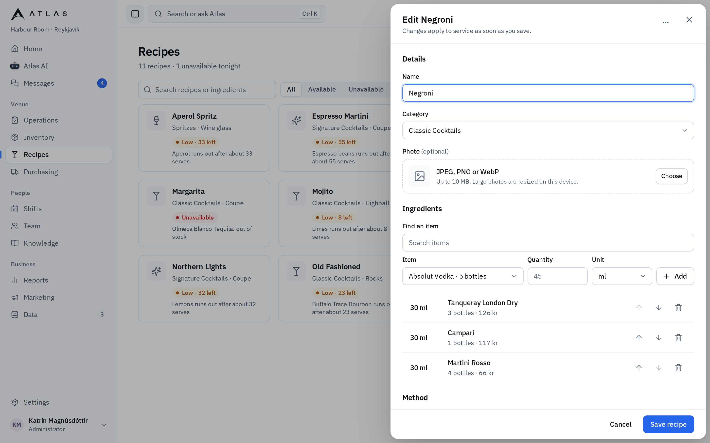
DesktopEditing a recipe: ingredients linked to inventory items, method, service details and price.
Archive, restore and delete
- Archive takes a recipe off service and off the menu but keeps its ingredients and history. Restore to service brings it back.
- Only archived recipes can be deleted. Delete permanently asks you to type the recipe's name to confirm. It removes the recipe and its ingredient links; items and stock aren't changed.
Public menu
Recipes marked Show on the public menu appear on a public menu page for guests. Press Public menu, then Copy link to share it.
Chapter 11
Purchasing
Create purchase orders from what is below par, track approval and delivery, and receive deliveries into stock.
Who uses it Administrator Manager
Purchasing is for managers. Bartenders and viewers don't see it; a link to it shows "Purchasing is for managers".
The Orders tab
The subtitle shows how many orders are open and how many are waiting for approval. The tabs are Orders, Deliveries and Suppliers.
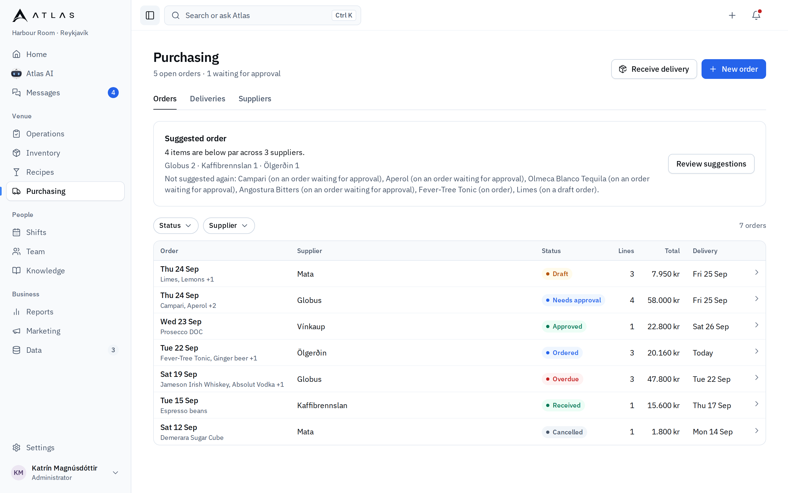
DesktopOrders, each with its status, total and expected delivery. Overdue deliveries stand out.
At the top, Suggested order says how many items are below par across how many suppliers, with Review suggestions. Items already on an order aren't suggested again, and the card says why.
Below it, every order: when it was created and what's on it, the Supplier, Status, Lines, Total and Delivery. Filter by Status and Supplier.
Order statuses
The life of a purchase order. Needs approval and Approved apply only when your venue’s rules ask for approval; a delivery that arrives in part keeps the order open as Partly received.
| Status | What it means |
|---|---|
| Draft | Being prepared. It can be changed freely. |
| Needs approval | Waiting for an approver. Only when your venue's approval rules apply. |
| Approved | Approved and ready to send. |
| Ordered | You've sent it to the supplier and marked it as ordered. |
| Partly received | Some of it has arrived. The rest is still expected. |
| Received | Everything has arrived. |
| Cancelled | Stopped before anything was received. Kept in the history. |
Two extra labels can appear: Overdue, when an ordered delivery is past its expected date, and Closed short, when the rest of a partly received order is no longer expected.
Creating an order
From the suggested order
The quickest way to order what's below par.
- On the Orders tab, press Review suggestions.
- Atlas groups the items by supplier, showing On hand, Par and a suggested Order qty. The suggestion brings stock back up to twice the par level, rounded up to whole cases where the item has a case size.
- Untick anything you don't want and change quantities.
- Press Create N orders. Atlas creates one Draft order per supplier.
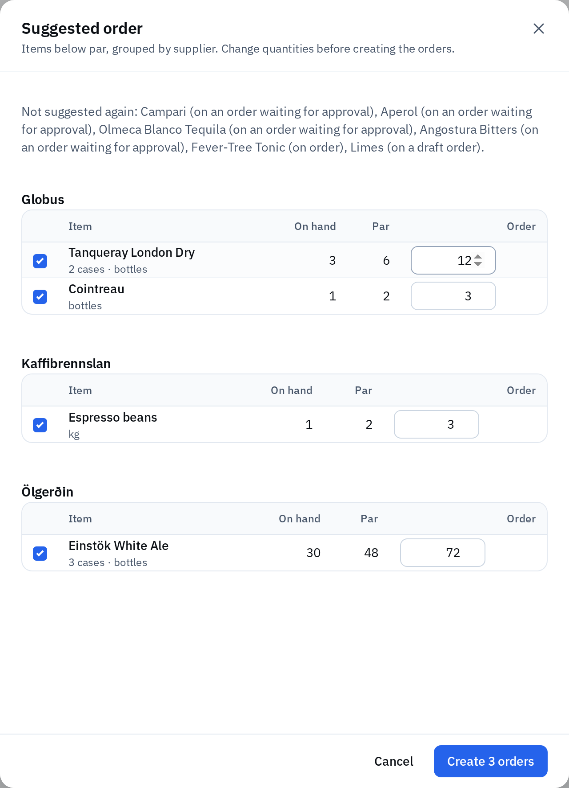
DesktopThe Suggested order sheet: below-par items grouped by supplier, with quantities you can change before creating the draft orders.
Items that aren't linked to a supplier can't go on an order: "These items aren't linked to a supplier in Atlas yet". Link a supplier in the item's Edit details.
A new order by hand
- Press New order.
- Choose the Supplier, and an Expected delivery date if you know it.
- Add Lines: Item, Quantity and Unit cost (filled in from the item's cost). Use Add line for more.
- Add a Note if needed. The running Total updates as you go.
- Press Create order. The order is saved as a Draft.
You can also start an order from Inventory (Add to an order on an item, or Add to order for ticked rows), from Home (Add to order on an out-of-stock row), or ask Atlas AI to prepare one.
DesktopA draft order. It can still be changed; send it for approval or mark it as ordered when it’s ready.
Approval
Your venue's rules decide whether an order needs approval before it is ordered, for example above a certain total. When approval applies:
- On the draft, press Submit for approval. Home shows the approver "Order from (supplier) needs approval".
- The approver opens the order and presses Approve, or Send back with a reason, which returns it to Draft.
DesktopAn order waiting for approval. The approver can approve it or send it back with a reason.
The rules can require an administrator ("Only an administrator can approve this order.") or someone other than the person who submitted it ("You submitted this order, so another manager needs to approve it.").
Marking an order as ordered
- Send the order to the supplier yourself.
- In Atlas, open the order and press Mark as ordered.
- Confirm. The order moves to Ordered and appears on the Deliveries tab.
To change the date, press Change next to Expected delivery.
Receiving a delivery
Receiving is what puts stock on the shelf in Atlas.
- Open the order and press Receive delivery (or Receive on Home's "Delivery from … is due today" row).
- For each line, check the quantity. It starts at what's still expected; change it to what actually arrived. Tick Short or Damaged where it applies.
- Press Receive X of Y lines. Atlas confirms "Received N lines · stock updated".
DesktopReceiving a delivery: enter what actually arrived. Here the ginger beer came short, 12 of 24.
What happens:
- Stock goes up straight away for everything you received.
- The item's cost is updated to the cost on the delivery, unless your venue has chosen to record costs only.
- If only part arrived, the order becomes Partly received and the rest stays open.
- Trying again after a connection problem is safe: "it won't be counted twice".
- Atlas refuses quantities well beyond what was ordered: "That's more than was ordered. Check the quantities."
DesktopA partly received order shows what has arrived and what is still to come.
Receive all receives everything that's left at the ordered cost in one step.
Close short ends a partly received order when the rest isn't coming: "What arrived stays received. The rest is no longer expected." Give a reason. If closing short is switched off for your venue, Atlas says so.
Check with a photo (optional). In the receive sheet, Scan delivery matches a photo of the delivery to the order lines. You still confirm every line.
A delivery without an order
- Press Receive delivery at the top of Purchasing.
- Open No order? Record a delivery without one.
- Enter the Item, Quantity received, Supplier, and optionally Unit cost and Discount.
- Press Record delivery. Stock goes up straight away.
Cancelling
Cancel order is available until anything has been received. Nothing is received, stock doesn't change, and the order stays in the history as cancelled. Once part of an order has arrived it can't be cancelled; use Close short instead.
Deliveries and Suppliers
- Deliveries lists the deliveries you're waiting for and what has arrived, with the expected date.
- Suppliers lists each supplier with contact, number of items, open orders, last delivery and Spend 30 days (only deliveries recorded with a cost count). Open one for contact details, ordering notes, its items and orders, and New order.
DesktopSuppliers: contacts, items, open orders and recent spend together.
To add a supplier, press Add supplier on the Suppliers tab and enter the Name, and optionally a Contact person, Phone, Email and Ordering notes (delivery days, account number, minimum order). Suppliers can't be edited or removed from Purchasing in this release.
Chapter 12
Shifts
Managers plan and publish the rota. Everyone sees their shifts, confirms them, sets their availability and asks for time off.
Who uses it Administrator Manager Viewer
The schedule
Shifts opens on the current week. Use the arrows and Today to move, and Week / Month to change the view. The On now strip shows who's on today and tomorrow, with a Handover button that opens the Shift handover channel.
DesktopThe manager’s week: people down the side, days across. Dashed shifts aren’t published yet.
Managers see each person as a row with their hours, and each shift as a chip with the time and role. Chips can carry a warning: Overlap, Not free (outside their availability), Time off or Change (a change was requested). Dashed chips aren't published yet.
On a phone, the schedule reads as a list of days instead of a grid.
PhoneA bartender’s own week on a phone, with shifts waiting to be confirmed.
Month shows the whole month with names and times. Click a day to see everyone working it and add a shift.
DesktopThe month view.
DesktopOne day opened from the month.
Planning the week
Available to Administrator Manager
Add a shift
- Press Add shift (or + in a day).
- Choose the Person. People without a login show "(schedule only)".
- Add a Role if useful ("Bartender, opening, closing"), the Date, Start and End. Start defaults to the day's opening time; an end before the start means it ends the next day.
- Add a Break and a Note if needed.
- Press Add shift. It's saved as a draft: "The team sees it after you publish."
DesktopAdd shift: choose the person, the day and the times. Atlas warns if the shift falls outside their availability.
Use Copy last week to start from last week's rota: every shift is copied in as a draft, and nothing is published.
Publish
Nothing is visible to the team until you publish. The status shows Draft · not visible to the team, Unpublished changes or Published.
- Press Publish week (or Publish month).
- Add a Note to the team if you like.
- Confirm. The team sees the schedule straight away and is asked to confirm their shifts.
Removing or changing a published shift only takes effect when you publish again; until then the team keeps seeing the published version.
Your shifts
Available to Administrator Manager
- Switch between Mine and Team.
- On each of your shifts, press Confirm, or Request change and say what you'd like changed ("For example: can I start at 19:00?"). Your manager sees your note.
- Your response shows as Needs confirmation, Confirmed, Change requested or Declined.
If you see "Your account isn't linked to the shift roster yet", ask a manager to add you in Team.
Availability
On the Availability tab, set your usual week: for each day, Available or Unavailable, from and until times, and a Note. Press Save. Managers see a warning when a shift falls outside it.
Time off
- On the Time off tab, press Request time off.
- Choose the Type (Vacation, Unavailable, Sick, Other), the First day and Last day, and add a note.
- Press Send request. Your manager is asked to approve it.
The request shows as Pending, then Approved or Declined.
Managing responses
Available to Administrator Manager
- Confirmations lists each confirmation and change request for the week. Close a change request with Resolve or Decline; a note is required and is shown to the person.
- Time off: Approve or Decline requests. Shifts on approved days show a warning. Record time off adds time off that is approved straight away.
- Activity is the history of publishing, changes, requests and decisions.
Chapter 13
Team
Everyone who works at the venue, with or without an Atlas login: profiles, photos, contacts, onboarding and, for managers, roles and access.
Who uses it Administrator Manager Viewer
The team directory
DesktopThe team directory: each person’s role, whether they’re on today, and for managers, training and emergency contacts.
Each row shows the person's photo or initials, name, Role (Administrator, Manager, Bartender, Viewer or Schedule only) and On shift today. Managers also see Training progress and whether an Emergency contact is saved, and can filter by Active, All or Inactive, Training due and Contact missing.
A profile
Click a person to open their profile. Open your own from the account menu with Your profile.
DesktopA profile, as a manager sees it: photo, contact details, emergency contact, this week’s shifts and onboarding.
A profile holds:
- Photo, name, job title and role.
- Contact: phone and, for managers and the person themselves, email, department, employment and start date. Phone numbers are shared with managers only unless the person chooses Everyone on the team. Email addresses are only visible to managers.
- Emergency contact: visible only to the person and to managers. Managers see "N contacts saved. Shown only when needed." and press Show emergency contact to see them.
- Shifts this week.
- Onboarding: required and optional steps, ticked off by a manager.
- On your own profile, Required reading, with a link to Knowledge.
- For managers: a private manager note, Access and History.
Your name and photo
The name you set is the name everyone sees.
- Open your profile (account menu › Your profile) and press Edit profile.
- Set Name shown in Atlas, your Phone, Who can see the phone number and your Language.
- Press Save profile.
DesktopEdit profile: Name shown in Atlas is the name everyone sees, including in Messages and Shifts.
Your Name shown in Atlas is the name your team sees in Team, Shifts and Messages, including on messages you sent before you changed it.
Add a photo:
- On your profile, press Add photo (or Change photo).
- Take a photo or choose one (JPEG, PNG or WebP). Atlas resizes it on your device.
- Atlas confirms "Photo saved".
Your photo appears in Team, Shifts, Messages and on your account button. To remove it, press the bin: initials are shown instead. Photos are private to your team. Managers can change or remove anyone's photo.
Emergency contact: press Add, enter the Name, Relationship, Phone and Order to call, then Save contact. Only you and managers can see it.
Adding people
Available to Administrator Manager
Add a team member
- Press Add team member.
- Enter the Name and Job.
- Choose Atlas access:
- No login — on the schedule only,
- Staff login (Bartender), or
- Read-only login (Viewer).
- For a login, enter their Email.
- Press Add team member. They appear in Team and Shifts straight away.
With a login, Atlas shows Share the setup link. Press Copy link and send it to them privately. No email is sent. They use it once to choose a password.
To make someone a manager or administrator, add them first, then change their role under Access.
Invite by email
- Press Invite by email.
- Enter their Email and, optionally, their Name.
- Press Send invitation. Atlas emails them a secure invitation.
Roles and Atlas access
Available to Administrator Manager
The Access section on a profile controls what the person can do.
- Open the person's profile and scroll to Access.
- Choose the Role: Administrator, Manager, Bartender or Viewer.
- Switch Atlas access on or off. When it's off, they're signed out on their next action.
- Press Save access.
DesktopThe Access section of a profile: role, the Atlas access switch, New setup link and Save access.
- Turning access off asks you to confirm. The person can't open Atlas until access is turned on again; their history stays.
- New setup link makes a fresh one-time link if the first one expired.
- You can't change your own role or switch off your own access. Only an administrator can change an administrator.
- People are never deleted. Switching off access is how someone leaves; their history is kept.
Chapter 14
Knowledge
Your venue's procedures, policies and training in one library, with required reading that each person confirms.
Who uses it Administrator Manager Viewer
Knowledge is where the team finds out how things are done at your venue: how to open the bar, how a cocktail should leave the pass, what to do about allergens. Everyone can read the articles shared with their role. Managers write, publish and retire them.
Every article is versioned. When a manager publishes a new version of a required article, it becomes due again for everyone who must read it, so the team always confirms the version that is live now.
DesktopThe Knowledge library. Categories on the left, search at the top and a Read or Draft pill on each article.
- Marker 1: Required reading lists what you still need to read and confirm.
- Marker 2: Search looks through the articles you are allowed to read.
- Marker 3: A pill shows your status: Read, Required · not read or Draft.
- Marker 4: New article is shown to managers only.
The Knowledge tabs
| Tab | What it shows | Who sees it |
|---|---|---|
| Library | Every published article you may read, by category, with search | Everyone |
| Required reading | Articles you must read and confirm, with a count of what is due | Everyone |
| Training | Your onboarding steps and progress. Managers also see the team's progress | Everyone |
| Sources | Where articles come from (for example a Google Drive document), recorded by hand | Managers |
| Activity | Who published, read, retired or changed what | Managers |
If a bartender or viewer opens a manager tab from a link, Atlas explains: "This part of Knowledge is for managers."
Finding and reading an article
- Open Knowledge from the sidebar (on a phone, MoreKnowledge).
- Choose a category on the left, or type in the search field. Search covers the full text of every article you may read.
- Open an article. The line under the title shows its category, type, when it was updated, the reading time and the version.
- Read to the end. Tick-boxes inside an article are personal checklists for you; ticking them does not change anything for anyone else.
- If the article is required for you, press Mark as read. Atlas confirms with "Marked as read", and the article shows "You've read version N."
DesktopA bartender reading a required article. Mark as read confirms this version; Ask Atlas about this opens Atlas AI with the article as context.
- Marker 1: Required · not read until you confirm it.
- Marker 2: Mark as read confirms that you have read this version.
- Marker 3: Ask Atlas about this lets you ask a question about the article.
Article types are Policy, Procedure, Checklist, Training, Reference and Live resource. Some articles include a link such as Open Operations that takes you straight to the part of Atlas the article talks about.
If search is temporarily limited, Atlas says: "Full-text search is unavailable right now, so only titles and summaries are searched." Try again a little later.
Required reading
The Required reading tab shows what is due for you under To read. When everything is confirmed it says "You're up to date."
Required reading follows the published version. When a manager publishes a new version of a required article, it is due again. Your earlier confirmation is kept in the history against the earlier version.
Training
The Training tab shows Your training: how many required onboarding steps are done, for example "3 of 5 required steps done." Your manager confirms each step on your profile in Team, so you cannot tick training steps yourself.
Managers also see Team onboarding progress, a table of every person with their required steps.
Writing and publishing articles
Available to Administrator Manager
Articles are written as private drafts. Nothing reaches the team until you publish.
Write a new article
- In Knowledge, press New article.
- Fill in Title, an optional Summary and the Article text. Start a line with
- [ ]to make a tick-box. - Choose the Category and Type.
- Under Who can read it, choose All, or the roles that should see it.
- Turn on Required reading if everyone who can read it must confirm each published version.
- Optionally choose Links to (Operations, Recipes, Inventory, Shifts, Team or Marketing) and the Training steps it supports.
- Press Save private draft. Atlas confirms: "Draft saved. Staff visibility has not changed."
DesktopEditing an article. Changes stay in a private draft until you publish a new version.
Publish a version
- Open the article. A banner reads Private draft: only managers see it, and the team keeps reading the published version.
- Press Publish version.
- Add a short note under What changed. Everyone it is shared with sees it straight away. If it is required reading, they are asked to read it again.
- Atlas confirms: "Version published to the team".
Below each article, managers see Who has read this version and the Version history.
Retire an article
Press Retire, give a reason and confirm with Retire article. The article disappears from the library for everyone. Its versions and confirmations are kept. There is no permanent delete.
Record a source
Press Add source on an article to record where it comes from: its Type (Google Drive, Atlas page, Imported file, Written by hand or Other link), Name, Reference and an optional private link. Source links are visible to managers only; you can choose to show the source name to staff.
Chapter 15
Reports
A read-only view of how the business is doing: stock value, purchasing spend, waste, recipe margins and scheduled labour.
Who uses it Administrator Manager
Reports turn the records your team already keeps into figures for a period you choose. Nothing can be edited here, so you can explore freely. Reports are for managers and administrators; staff who follow a link see "Reports are for managers".
Reports only show what Atlas actually knows. Where a figure depends on something that is missing, such as a count or a cost, Atlas says so instead of guessing.
DesktopThe Reports overview for the last 30 days, compared with the previous period.
- Marker 1: Period: choose the dates the report covers.
- Marker 2: Comparison with the previous period, or none.
- Marker 3: Export as CSV, PDF or a copied summary.
- Marker 4: The headline figures, each with a line that explains it.
Choosing the period
At the top of every report:
- Period: Today, Last 7 days, Last 30 days (the default), This month, Last month, Year to date, or Custom dates with From and To.
- Comparison: "vs previous period" or "No comparison". With a comparison, figures show a change such as "▲ 12 % up", "▼ 5 % down", "Same as before" or "No comparable figure".
- Export: Download CSV, Print or save as PDF or Copy summary.
- Ask Atlas: opens Atlas AI with the report as context.
The line under the page title says when the figures were updated and how many data sources are connected.
The report tabs
| Tab | Headline figures | Detail table |
|---|---|---|
| Overview | Inventory value, Purchasing spend, Waste, Recipe margin | Needs attention, Money, Data completeness |
| Stock | Stock value, Below par, Out of stock, Counted recently | Item, Category, On hand, Par, Status, Unit cost, Value |
| Purchasing | Spend, Deliveries | Date, Item, Supplier, Quantity, Unit cost, Total |
| Recipes | Available, Running low, Unavailable, Setup incomplete | Recipe, Availability, Price, Cost per serve, Margin, Serves |
| Waste | Entries, Value | Date, Item, Type, Quantity, Value, Note |
| Labour | Shifts, Scheduled hours, Not published | Start, Person, Role, End, Hours, Published |
Each tab has a chart where there is enough data, and a table you can sort by any column, 25 rows per page.
How to read the figures
Inventory value (Overview) and Stock value (Stock tab) are counted stock at unit cost, as it stands now. They are a snapshot of today, not of the period you chose. Atlas shows a single value only when every active item is counted and has a cost. Otherwise you see what is known, for example "At least 184 000 kr — 6 not counted · 2 without a cost", or "Unknown until every item is counted and costed".
Counted recently shows how many active items have a current verified count, for example "38 of 52". Verified counts expire after a set number of days, after which the item returns to Not counted until it is counted again.
Purchasing spend includes only deliveries that were received with a cost. "No deliveries with a cost in this period" means nothing costed was received in the period. It does not mean you spent nothing: deliveries recorded without a cost are simply not in the figure.
Waste shows only waste that someone recorded in Inventory. "None" means no waste was recorded in the period. When some entries have no cost, the value line says so.
Recipe margin is theoretical: it comes from recipe costs and menu prices. The line under it shows how many recipes are fully costed.
Labour shows scheduled hours only. Atlas does not store pay rates, so labour cost is not shown. Not published counts shifts that are still drafts.
Sales show as "Not connected". No point-of-sale system sends sales to Atlas, so revenue, popularity and realised margin are never shown or estimated.
DesktopThe Stock tab: stock value now, items below par or out of stock, and how many items have a recent verified count.
- Marker 1: Counted recently: items with a current verified count, out of all active items.
A dash (—) in a table cell means the value was not recorded. It is not a zero.
If stock data could not load, Reports shows "Stock figures are incomplete" and hides inventory value, suggested orders and count coverage until everything loads. Press Try again. Nothing was changed.
Data completeness
At the bottom of the Overview, Data completeness shows how complete your records are: Items with a cost, Items with a par level, Items with a supplier, Items counted recently and Recipes fully costed, each as a percentage. Anything under 100 % has a Fix link that takes you to the right place, usually DataIssues or DataPar levels.
Next to it, each data source shows its state: Connected, Partly complete, Not connected, No records yet or Nothing this period.
Exporting
- Download CSV saves the current report and period as a spreadsheet file. Atlas confirms "CSV downloaded."
- Print or save as PDF opens your browser's print dialog.
- Copy summary copies a short text summary you can paste into a message or email. Atlas confirms "Summary copied."
Chapter 16
Marketing
Plan posts and campaigns, send them for approval, and keep track of what was published.
Who uses it Administrator Manager
Marketing helps managers plan social media and campaign work in one calendar, agree it through an approval step, and keep a history of what went out. In this release, Atlas does not post anything itself: you publish on the social network as you do today, then mark the post as published in Atlas.
Marketing is for managers and administrators. Bartenders and viewers who open a Marketing link see "Marketing is for managers". Staff can still share ideas in the Marketing channel in Messages.
Available now
DesktopThe Marketing overview: what is coming up in the next 14 days, what is waiting for approval, and suggestions from your venue's routines.
- Marker 1: Publishing is manual. Atlas records what went out; it does not post.
- Marker 2: Review opens a post waiting for your approval.
- Marker 3: Plan this turns a suggestion into a draft.
Under the page title a line explains how publishing works: "Publishing is manual until a social account is connected." A link, Connections in Settings, opens SettingsIntegrations.
The Marketing tabs
- Overview: Coming up (the next 14 days), Waiting for approval, and Suggestions from your venue's routines. Suggestions are only ideas: nothing is posted automatically. When one is due today, Plan this turns it into a draft.
- Calendar: a month view of everything planned, with Previous month, This month and next.
- Posts: your posts, filtered as Active, Drafts, Waiting or Approved.
- Campaigns: groups of posts and tasks around one goal, such as a menu launch or an event.
- History: Published and done, and an Activity log of every step.
Post types are Post, Story, Reel, Campaign task, Event promotion, Idea and Google post. Channels are Instagram, Facebook, TikTok and Google Business Profile.
Plan a post
- Press New post draft. The sheet reminds you: "Nothing is posted automatically."
- Enter a Title, choose the Type, an optional Campaign and the Channels.
- Write the Text. The Preview updates as you type.
- Under Photos or video needed, describe the media, for example "Close-up of the new espresso martini". Atlas doesn't store post media yet, so keep the photo or video yourself and attach it when you post.
- Set Post on (venue time) and, if you like, Remind me.
- Press Save draft to keep working on it, or Submit for approval.
DesktopA new post draft with channels, text, the media you will need and a preview.
Approve a post
- Open the post from Waiting for approval (Review).
- Read it through. If you want changes, write a Note for the team. A note is needed to request changes or reject.
- Press Approve, Request changes or Reject.
Publish and mark as published
- Post the approved content yourself on the social network or Google profile.
- Open the post in Atlas and press Mark as published.
- Atlas confirms: "Marked as published. Nothing was posted by Atlas."
The post moves to History, so everyone can see what went out and when.
Campaigns
Press New campaign, give it a Name, a Type (Promotion, Event, Seasonal, Always on, Brand or Other), Starts and Ends dates and an optional Goal, then Create campaign. Choose the campaign when you plan each post.
Coming in a later release
Chapter 17
Data and imports
Bring outside files in safely, fix incomplete records, set par levels and approve catalogue changes.
Who uses it Administrator Manager
Data is the manager's workshop for the quality of your records. Here you upload files from outside Atlas, see which items and recipes are missing information, set par levels in bulk, and decide on catalogue changes that staff scans, imports and Atlas AI propose.
The golden rule is simple: nothing in Data changes your live records until a manager has reviewed it.
Data is for managers and administrators. The sidebar badge on Data shows how many catalogue changes are waiting for approval.
The Data tabs
| Tab | Use it to |
|---|---|
| Imports | Upload a file and follow what happens to it |
| Issues | Find items and recipes with missing information, and fix them |
| Par levels | Set or change par levels for many items at once |
| Import review | Approve or reject records from earlier imports, one by one |
| Waiting for approval | Decide on new items, names, barcodes and duplicates proposed by the team |
Uploading a file
- In Data, press Import a file.
- Under What does this file contain?, choose Inventory and stock counts, Recipes, Suppliers, Menus, Invoices, Purchases or Photos.
- Choose the file or drop it on Choose a file or drop it here. CSV, Excel, PDF, JSON, text or a photo, up to 50 MB.
- Press Upload. Atlas confirms "File uploaded." and opens the import.
DesktopThe Imports list: each file with what it contains, its status, how many records it holds and when it was uploaded. This example includes files from earlier imports in other statuses.
- Marker 1: Import a file uploads a new file.
- Marker 2: The status of each file.
What you see after uploading
The import page shows three steps, Upload, Review and Import, and the facts about your file: what it contains, its size, how many records it holds ("Not read yet" until it has been read), and when it was uploaded.
In this release, Atlas does not read uploaded files automatically. Your file is stored privately, visible to managers only, and stays in the Uploaded status. From the import page you can:
- Download file to get the original back.
- Cancel import. Atlas stops working on the file but keeps it, so you can delete it or try again later.
- Delete import. The uploaded file and its import record are removed. Live records are not changed. This can't be undone.
Imports can show these statuses: Uploaded, Uploading, Reading, Needs review, Imported, Failed and Cancelled. If a file could not be read, you see "Atlas couldn't read this file." Your live records were not changed; upload a corrected file. Spreadsheets work best as CSV with one product per row.
Import review
Import review lists records from earlier imports that are waiting for a decision: "Nothing here changes live records until you approve it." Filter by type (for example Inventory, Recipes, Suppliers or Invoices) and status (Waiting, Held, Source checked, Approved, Rejected or Excluded).
- Open a record. You see What the file says, the Original row and any issues.
- Choose an Action: Needs review, Create new item, Merge into an existing item, or Skip. For a merge, choose the Existing record.
- Add Notes if useful, then press Approve or Reject (or Back to waiting).
Approving a record here does not change live records by itself. Atlas confirms: "Approved. Live records change only when the import runs."
Issues
Issues lists active items and recipes that are missing something Atlas needs, such as:
- "No supplier", "No unit or case cost", "No package size", "No par level"
- "No SKU, barcode or supplier reference"
- "No menu price", "No ingredients", or an ingredient that "isn't linked to an item"
- a possible duplicate ("Looks like … (N % match)") or a code shared by several items
Each row has a button that takes you to the fix: Set par, Edit recipe, Open item, Review or Resolve. When everything is in place, the tab says "No record issues". Counts refresh when you come back after fixing a record.
For a possible duplicate, choose what the pair really is: the same product (keep one, retire the other; stock is never moved), different products (stop suggesting this pair), or the same product in a different pack size. Press Save decision.
Par levels
A par level is the quantity you want on hand after a delivery. Atlas uses it to show what is Below par and to suggest orders. Par levels are changed here, in bulk, rather than in the item details.
- Open DataPar levels. Use search, All categories and All suppliers to narrow the list.
- Type a value in New par for each item you want to change.
- Optionally enter Days of cover and press Suggest pars. Where Atlas has enough evidence, a Suggested par appears; press Use to copy it into New par.
- The bar at the bottom shows how many changes are not saved. Press Save N changes, or Discard.
DesktopPar levels: current par, a suggested par where there is enough evidence, and the new value you type.
Suggestions use only verified counts and recorded deliveries: at least 3 counts over 14 days. When there is not enough evidence, Atlas says why, for example "Needs 3 counts; has 1" or "Counts cover 6 days; needs 14". Nothing is saved until you press Save.
If someone else changed a par while you were editing, Atlas saves nothing and tells you. Press Load current values and make your changes again.
Waiting for approval
When a bartender suggests a new product or barcode from a scan, when a scan is reported as the wrong product, or when Atlas AI proposes a new name or item, the request waits here for a manager. Home also shows managers "N catalogue changes are waiting for your approval".
- Open DataWaiting for approval. Each row says what is proposed, for example "Link barcode … to Campari" or "Add a new item: …".
- Press Review. Check the details, who requested it and where it came from (a scan, Atlas AI, an import), and any Similar items.
- Add a Note if useful and press Approve or Reject.
Approved changes are applied straight away: "Approved and applied." Approving a catalogue change never changes stock quantities.
Suggest missing details asks Atlas to read each active item's category, size and package text and propose the missing product type and unit size. Every suggestion waits here for your approval; no item changes until you approve it.
DesktopCatalogue changes waiting for a manager's decision.
Chapter 18
Settings
Venue details, opening hours, rules, Atlas AI, outside connections and your own preferences.
Who uses it Administrator Manager Viewer
Settings has one section for each area. Managers and administrators see most sections. Bartenders and viewers reach only Preferences and Notifications, from the account menu (Preferences or Notification settings) or, on a phone, from MorePreferences.
Each section is a form. When you change something, a bar appears with Unsaved changes, Discard and a save button. Sections you can see but not change say "Read-only for your role". Every saved change is kept in SettingsActivity.
| Section | Administrator | Manager | Viewer | |
|---|---|---|---|---|
| Venue | Yes | Yes | No | No |
| Opening hours | Yes | Yes | No | No |
| Team access | Yes | No | No | No |
| Notifications | Own only | Own only | Own only | Own only |
| Operational rules | Yes | Yes | No | No |
| Atlas AI | Yes | Yes | No | No |
| Integrations | Yes | Yes | No | No |
| Security | View only | No | No | No |
| System health | View only | No | No | No |
| Preferences | Own only | Own only | Own only | Own only |
| Activity | View only | View only | No | No |
Venue
Available to Administrator Manager
The business details Atlas uses on documents, in Atlas AI and for your team: Business name, Legal name, Registration number, Location name, Address, City, Country code, Language, Email, Phone, Website and Booking link. The currency is fixed to ISK.
The business name and city appear under the Atlas logo in the sidebar and on the sign-in screen.
Opening hours
Available to Administrator Manager
Opening hours drive "today" everywhere in Atlas: the Home timeline, checklists and what Atlas AI knows about service times. Without saved hours, Atlas says so; it never guesses.
- Under Time zone, check the venue time zone and press Save time zone if you change it.
- Under Weekly hours, set for each day whether you are Open, and when it Opens and Closes. Tick Next day when you close after midnight. Add Last orders and Kitchen times if you use them.
- Copy Monday to all fills every day from Monday.
- Press Save hours.
A late close still belongs to the day you opened: a Friday that closes at 02:00 is Friday's business day.
Offers such as a happy hour appear on the Home timeline on their days. Press Add offer, fill in the name, times, days and description, and press Create offer.
DesktopWeekly opening hours. Tick Next day when the venue closes after midnight.
Team access
Available to Administrator
What each role may do. Administrators see one form per role with its permissions and Save permissions. The Administrator role is protected.
A person's role, and whether they can sign in at all, are changed on their profile in Team, not here. Invitations are also sent from Team, with Invite by email.
Notifications
Alerts on this device. See the Notifications chapter for how to turn them on and what each status means.
Operational rules
Available to Administrator Manager
Thresholds, reminders and approvals for Shifts and service, Stock, Temperature log, Cleaning and Marketing approvals. Each form tells you whether it is in use: "Settings marked “in use” change Atlas today; the rest are saved for upcoming features." or "Saved for upcoming features — these don't change Atlas yet."
The Stock rules include Count difference allowed (%), which decides which lines a stock count flags as a big difference.
The Ordering rules (approval before ordering, receiving more than ordered, closing an order short, delivery date required, staff receiving deliveries) are shown read-only. They explain how Purchasing behaves at your venue.
Atlas AI
Available to Administrator Manager
Whether Atlas AI is on for the venue, and its daily limits. The status pill shows On, On, but not connected yet or Off. When Atlas AI is off, it answers from saved records only and prepares nothing.
Where your venue's setup shows them, you can set limits per person per day, such as questions, voice conversations, voice minutes, files and upload size, and how long photos and files are kept.
Under Your replies, anyone who can open this section can choose how Atlas AI answers them personally: Reply length, whether to read answers aloud in voice conversations, whether to offer voice, and the reply Language.
Under Suggestions and learning, choose whether Atlas learns from orders, recipes and waste. Atlas never acts on a suggestion by itself; a person approves every change.
Integrations
Available to Administrator Manager
Outside accounts Atlas can use: Google Business Profile, Google Drive, Facebook Page, Instagram, TikTok and Tripadvisor. Connecting happens on the provider's own page; Atlas never sees your passwords.
Each provider shows its real state:
| State | What it means |
|---|---|
| Not set up yet | This connection has not been prepared for your venue. An administrator can set it up. |
| Not connected | Ready to connect. Press Connect. |
| Checking | Atlas is checking the connection. |
| Connected | The account is linked. Use Test connection to check it, or Disconnect. |
| Needs attention | The connection stopped working. Press Reconnect. |
| Waiting for platform review | The provider is still reviewing the connection. |
DesktopIntegrations: each provider shows its real state. Here nothing is connected yet, and one provider is not set up.
Security
Available to Administrator
A read-only overview for administrators. Enforced now: staff sign-in, an active profile required, role-based access, and keys kept on the server. Not available yet: two-factor authentication, automatic sign-out after inactivity, trusted devices and emergency lockdown. To remove someone's access today, turn off their Atlas access in Team.
System health
Available to Administrator
A read-only technical overview of Atlas's services for administrators. It never reports a service as healthy without a check.
Preferences
Everyone's own settings, saved to your profile:
- Start page: the page Atlas opens after you sign in. Only pages your role may open are offered.
- Reduce motion: turns off animations across Atlas.
The section also shows your notification status on this device, the theme (Light is the only theme for now), the language (English) and the venue's time zone. Press Save preferences.
Activity
Available to Administrator Manager
"Changes to settings, newest first. This history can't be edited." Every saved setting appears with who changed it.
Chapter 19
Notifications
What changed and what needs you, in one place, and optional alerts on your device.
Who uses it Administrator Manager Viewer
Atlas has two kinds of notifications: the bell inside Atlas, which everyone has, and optional device notifications, which you turn on per device.
The bell
The bell in the top bar opens Notifications. A dot on the bell means something is unread.
DesktopThe Notifications panel. Each item has a button that takes you straight to it.
- Marker 1: The bell, with a dot when something is unread.
- Marker 2: All or Needs action.
- Marker 3: More options: Mark all as read and Notification settings.
- Marker 4: Each item's button opens it and marks it read.
What you find there:
- Everything in Needs attention on your Home that your role can see, such as an out-of-stock item or a checklist that is not done.
- One item for each Messages conversation with unread messages, for example "3 new messages in General".
- Other updates from the parts of Atlas you use.
Use All or Needs action to filter. Tap an item to open it; it is marked as read. Use the … menu for Mark all as read.
When there is nothing new you see "You're up to date", or with Needs action, "Nothing needs you right now".
On a phone, Notifications opens full screen. Use the back button to close it.
Notifications on your device
You can ask Atlas to send alerts to this phone or computer. It is a separate choice on each device.
- Open the account menu and choose Notification settings (or SettingsNotifications).
- Under This device, press Turn notifications on.
- Your browser asks for permission. Allow it.
To stop alerts on a device, press Turn notifications off. This device is unsubscribed; your other devices are not affected.
DesktopSettings › Notifications. Here the browser has blocked notifications, so the status says what to do.
Alerts sent today lists the alerts a device is set to receive: New messages in Messages and Published shift changes.
The status on This device tells you where you stand:
| Status | What to do |
|---|---|
| On | Nothing. This device is subscribed. |
| Off | Press Turn notifications on. |
| Needs reconnecting | Press Reconnect this device. |
| Blocked in browser | Open this site's settings in your browser (the icon next to the address), allow notifications, then reload Atlas. |
| Not set up | Notifications are not set up on the Atlas server yet. Use the bell. |
| Not supported | This browser can't receive notifications. Use the bell. |
Chapter 20
Common workflows
Five everyday routines, step by step, using the parts of Atlas that are live today.
Each card follows a real routine from start to finish. The role line tells you who does it. Steps name the exact buttons you press.
Opening the venue
Available to Administrator Manager
Opening the venue
-
Open Home
Read the line under the greeting: when you open, how the opening checklist is going and how many are on shift tonight.
-
Check Needs attention
Start at the top: out-of-stock items, deliveries due today and temperatures not logged yet. Each row has a button that takes you there.
-
Open the checklist
Press Opening checklist on Home. Tick each item as you do it; Atlas saves your name and the time straight away.
-
Log temperatures
Press Log temperature in Operations, choose the point and enter the reading. If it is out of range, say what you did about it.
-
Read the handover
Open MessagesShift handover for anything the last shift left for you.
-
Complete the checklist
Press Complete checklist. Everyone sees it as done, with your name and the time.
Managers can also press Add to order on an out-of-stock row. Viewers can follow along but can't tick checklists.
DesktopThe opening checklist after ticking an item: your name and the time are saved straight away.
Receiving a delivery
Available to Administrator Manager
Receiving a delivery
-
Find the order
On Home, press Receive on "Delivery from … is due today", or open PurchasingDeliveries and open the order.
-
Start receiving
Press Receive delivery. Optionally use Check with a photo (optional) to match what is in the photo to the order; you still confirm every line.
-
Check each line
Each line starts at the quantity still expected. Change it to what actually arrived and mark Short or Damaged where needed.
-
Receive
Press Receive X of Y lines. Stock goes up straight away and the order shows Partly received or Received.
-
Deal with the rest
If the remainder will not come and closing short is switched on, press Close short and give a reason.
If everything arrived as ordered, Receive all receives every remaining line at the ordered cost. For goods that came without an order, press Receive delivery at the top of Purchasing and open No order? Record a delivery without one.
Receiving is for managers. If you are a bartender and a delivery arrives, let a manager know, for example in MessagesOperations.
DesktopReceiving a delivery: one line arrived short, 12 of 24.
Adding a new cocktail
Available to Administrator Manager
Adding a new cocktail
-
Check the ingredients
Search Inventory for each ingredient. If one is missing, press Add item. New items start as Not counted.
-
Create the recipe
In Recipes, press New recipe. Add the name, category and a photo if you have one.
-
Link every ingredient
Under Ingredients, use Find an item, enter the quantity and unit, and press Add. Linked ingredients let Atlas work out availability and cost.
-
Method, service and price
Write one step per line, add glass, garnish and notes, and enter the Menu price to see cost per serve and profit.
-
Save
Press Save recipe. Make sure On service is ticked to put it on service; tick Show on the public menu if guests should see it.
-
Check availability
The recipe shows Available, Low, Unavailable or Setup incomplete. Setup incomplete lists what is missing, such as an ingredient that is not counted yet.
-
Tell the team
Post in MessagesGeneral, or write a Knowledge article linked to Recipes. Plan a post in Marketing if you want to promote it.
A new ingredient only shows as available after it has been counted and the count verified.
Preparing for the weekend
Available to Administrator Manager
Preparing for the weekend
-
Count the bar
Earlier in the week, press Start stock count and count the whole bar or one area. Staff can count and press Submit for verification.
-
Verify the count
Open the count from Home ("… is waiting for verification"), check the differences and press Verify count. Verified counts become the stock Atlas shows.
-
Review the suggested order
In PurchasingOrders, press Review suggestions. Adjust quantities and press Create N orders. They are created as drafts.
-
Send and mark the orders
Send each order to the supplier as you usually do, by phone, email or their portal. Then press Mark as ordered. Atlas never sends orders for you.
-
Publish the rota
In Shifts, press Copy last week or add shifts, then Publish week with a note to the team. Staff are asked to confirm their shifts.
-
Brief the team
Post weekend news in MessagesAnnouncements.
Staff handover
Available to Administrator Manager
Staff handover
-
Finish the closing checklist
On Home, after last orders, press Closing checklist, tick each item and press Complete checklist.
-
Pause any count
If a stock count is still open, press Pause. The next person can continue on any device.
-
Write the handover
Open MessagesShift handover (or Handover in Shifts) and press Write handover.
-
Fill in what matters
What happened, Stock issues and For the next shift. At least one section is needed.
-
Post it
Press Post handover. The next shift sees it in Shift handover, with an unread badge on Messages.
Report waste or breakage to a manager in the handover; recording waste in Inventory is for managers.
DesktopWrite handover, opened from the Shift handover channel.
Chapter 21
Atlas AI: example questions
Questions to try, grouped by what you want to know.
Atlas AI answers from your venue's records, and only from what your role may see. Under each answer, How Atlas knows lists the records it used and marks each one as Verified, Calculated, Estimate, Interpretation or Missing.
When Atlas can help with a change, such as a draft order or a count, it prepares a card. Nothing happens until someone with the right role taps the button on the card. Typing or saying "yes" is not an approval.
Suggested in Atlas
These are the suggestions Atlas shows when you start a new conversation. Which ones you see depends on your role.
Start here
“What's low before tonight?”
Everyone. Checks verified stock against par levels.
“Who's on tomorrow?”
Everyone. Reads the published schedule.
“Does this delivery match our order?”
Administrators and managers. Take a photo of the delivery note or boxes.
“Which recipes can't we make tonight?”
Bartenders and viewers. Checks recipes against verified stock.
“Count the back bar by voice”
Administrators, managers and bartenders. Starts a live voice conversation.
“What's on today's checklist?”
Viewers. Reads today's checklists.
With a photo attached, Atlas offers: "Does this match our order?", "Count these bottles" and "What is this?". A count from a photo is an estimate for you to check.
DesktopA new conversation with the suggestions for a manager.
Stock and recipes
For everyone
“How many bottles of Campari do we have?”
Uses the last verified count plus recorded movements. If the item isn't counted, Atlas says so.
“Which items haven't been counted recently?”
Lists items with no current verified count.
“Can we make a Negroni tonight?”
Checks every linked ingredient against verified stock.
“What's in our Espresso Martini?”
Reads the recipe build and method.
“What waste was recorded this week?”
Reads waste recorded in Inventory.
“Is this barcode in our inventory?”
Looks up the code you give it.
Ordering and money
Available to Administrator Manager
For managers
“What needs ordering from each supplier?”
Uses below-par items and skips what is already on an open order.
“Prepare a draft order for our spirits supplier.”
Prepares a card; tap Create order to make a Draft.
“Which deliveries are due or overdue?”
Reads open orders and their expected dates.
“Have any supplier prices gone up recently?”
Compares recent delivery costs.
“What does an Espresso Martini cost us per serve?”
Uses ingredient costs and pack sizes.
“Which recipes have the best margin?”
Theoretical margin, from recipe costs and menu prices.
“What is our stock worth right now?”
Counted stock at unit cost; tells you what is not counted or costed.
“How much did we spend on deliveries this month?”
Costed deliveries only.
Team, shifts and procedures
Running the shift
“Who is working on Friday?”
Reads the published schedule.
“What does our closing procedure say about the ice well?”
Searches Knowledge articles you may read.
“Is the opening checklist done?”
Reads today's checklists.
“Draft a message to the team that we're out of limes.”
Prepares a message card; tap Send message to post it.
“Draft a shift for Friday 18:00 to 01:00.”
Managers. Saves an unpublished draft shift once you tap the card.
“Write a draft article on how we store garnishes.”
Managers. Saves a private Knowledge draft.
What Atlas AI will not do
- It never changes stock, orders, shifts or messages on its own. Every change is a card that a person taps.
- It never invents stock, costs, sales, item names or barcodes. If something is missing, it says so.
- It does not know sales: no point-of-sale system is connected.
- It never sends anything to suppliers or posts to social media.
- It does not change settings, par levels, roles or recipes. For settings and par levels it can only suggest a change and open the right page.
Chapter 22
Troubleshooting
The messages you may see, what they mean and what to do.
Atlas tells you plainly when something did not work, and almost always whether anything was changed. Find the message below, then follow the action.
Signing in and access
| What you see | What to do |
|---|---|
| "Email or password is incorrect." | Check both and try again. If you have forgotten your password, press Forgot your password? on the sign-in screen. |
| A message that your account is not an active staff profile and to ask an administrator to review access | Your Atlas access is off. This is normal right after you accept an email invitation. Ask a manager to open your profile in Team, set your role, turn Atlas access on and save. |
| "This invitation has expired or was already used. Ask your manager for a new one. If you already set a password, sign in instead." | Ask your manager for a new setup link, or sign in if you already chose a password. |
| "This reset link is invalid or has expired. Request a new link below." | Request a new reset link and open it on the same device. |
| "Atlas couldn't connect. Check your connection, then try again." | Check Wi-Fi or mobile data, then press Retry connection. |
| "Your session ended. Sign in again to continue where you were." | Sign in again. Atlas takes you back to where you were. |
| "Atlas can't check your sign-in right now. You're still signed in; try again in a moment." | Wait a moment and carry on. |
New passwords need at least 10 characters.
Offline and saving
| What you see | What to do |
|---|---|
| "You're offline. Changes can't be saved until you reconnect." | Reconnect, then refresh. Atlas does not queue changes while offline, so redo anything that was not saved. |
| "Not sent" with Retry on a message | Press Retry when you are back online. |
| "… changed on another device. It's been refreshed; check it and try again." | Someone else changed the same thing. Check the refreshed version, then make your change again. |
| "Someone else saved this after you opened it." (Settings) | Discard your changes to see theirs, then edit again. |
Permission denied
| What you see | What it means |
|---|---|
| "That page is for managers. Ask an administrator if you need access." | The page is for managers and administrators. Atlas takes you to Home. |
| "Purchasing is for managers", "Reports are for managers", "Marketing is for managers", "Data is for managers" | These areas are for managers only. |
| "Your role can't do that in …" or "This isn't available for your role." | Your role can't make this change. Ask a manager. |
| "You can read messages. Ask a manager if you need to post." | Viewers can read Messages but not post. |
| "Only managers can post in Announcements. You can read everything here." | Post in another channel, or ask a manager. |
| "Your role can view checklists but not tick them." | Viewers can follow checklists but not tick them. |
| "Only a manager can approve this." (Atlas AI card) | Ask a manager to tap the card. |
If you think your role is wrong, ask your venue's Atlas administrator. Roles are changed on your profile in Team.
Stock and counts
| What you see | What to do |
|---|---|
| "Not counted" or "Stock hasn't been counted yet." | Atlas has no current verified count for the item. It is not out of stock. Start a stock count and have a manager verify it. |
| "Stock figures are incomplete" | Part of the stock data didn't load, so Atlas hides all stock numbers rather than show wrong ones. Press Try again. Nothing was changed. |
| "Count or skip every item first." | Count or skip the remaining items before you submit. |
| "This line changed on another device. It's been refreshed; check it and save again." | Check the quantity and save again. |
| "Stock changed during this count" | Read the list, then press Verify anyway. Later changes are added on top; nothing is erased. |
| "Only counted items with stock can be recorded as waste." | Count the item and have the count verified first. |
| "Waste may not have been recorded." | Open Movements to check before trying again, so nothing is recorded twice. |
Upload failed
| What you see | What to do |
|---|---|
| "Atlas couldn't read this file." (Data) | Your records were not changed. Upload a corrected file. Spreadsheets work best as CSV with one product per row. |
| "This file is larger than 25 MB." (Atlas AI) | Use a smaller file. |
| "Photos and PDFs in one message can be up to 20 MB together. Remove one and try again." | Send fewer or smaller files in each message. You can attach up to 4 files per message. |
| "Atlas can read photos, PDFs, text and CSV files." | Save the file in one of these formats. |
| "That photo wasn't accepted. Use a JPEG, PNG or WebP image under 2 MB." (profile photo) | Choose a JPEG, PNG or WebP photo. |
| "Photos and files need Atlas AI to be switched on." | Atlas AI is off for your venue. Ask your administrator. |
Photo or camera not working
| What you see | What to do |
|---|---|
| "Profile photos couldn't be loaded. Initials are shown instead." | Nothing is lost. Try again later. |
| "Camera access is off. Allow the camera in your browser settings, or upload a photo." | Allow the camera for Atlas in your browser's site settings, or use Upload photo or Type code. |
| "No barcode found. Take a photo of the label." | Take a clear photo of the front label. |
| "Photo recognition isn't set up yet. Scan the barcode or search instead." | Use the barcode or search. |
| "Microphone access is blocked. Allow it in your browser settings to record." | Allow the microphone for Atlas in your browser's site settings. |
Integration not set up
| What you see | What to do |
|---|---|
| "Not set up yet" in Settings › Integrations | The connection has not been prepared for your venue. An administrator can set it up. |
| "… isn't set up yet. An administrator can set it up." | As above. |
| "You cancelled on … Nothing was connected." | Press Connect again and finish the steps on the provider's page. |
| "Needs attention" | Press Reconnect. |
| "Not connected — Atlas doesn't sync Drive documents automatically." (Knowledge › Sources) | Expected. Record sources by hand. |
| "Sales … Not connected" (Reports) | Expected. No point-of-sale system is connected, so sales are not shown. |
Atlas AI limits and what it can't do
| What you see | What to do |
|---|---|
| "Atlas AI isn't switched on yet" | Your venue hasn't switched Atlas AI on. Quick answers from your records still work. An administrator can switch it on in Settings › Atlas AI. |
| "You've reached today's limit …" or "You've used today's live voice sessions." | Daily limits reset within 24 hours. Text and voice notes may still work. A manager can review the limits in Settings › Atlas AI. |
| "Atlas is getting a lot of requests from you right now. Wait a minute, then try again." | Wait a minute. |
| "Atlas took too long to answer. Try again, or ask a narrower question." | Ask about one thing at a time. |
| "That message is too long. Shorten it and try again." | Shorten your message. |
| "Live voice is still open on another device or tab." | Press Continue here to move it to this device. |
| "This proposal was already handled or has expired." | Cards expire after 24 hours. Ask Atlas to prepare it again. |
| "Something changed since Atlas prepared this. Nothing was changed." | Ask Atlas to prepare it again with the current records. |
| Atlas answers but does not make the change | This is by design. Atlas prepares a card; a person with the right role taps it. Settings, par levels, roles and recipes are changed on their own pages. |
Other messages
| What you see | What to do |
|---|---|
| "Checklists aren't available in this environment yet." or checklists "aren't set up on the server yet" | Ask your administrator. Checklist templates are set up for the venue. |
| "This checklist day is closed. Earlier days can't be changed." | Nothing to do. Past days are kept as they were. |
| "Opening hours aren't set" | A manager adds them in Settings › Opening hours. |
| "Your account isn't linked to the shift roster yet. Ask a manager to add you." | A manager adds you in Team. |
| "No published shifts this week" | The manager hasn't published the week yet. |
| "This article isn't available. It may have been retired or isn't shared with your role." | Ask a manager. |
| "Nothing was saved: N par levels were changed by someone else" | Press Load current values and make your changes again. |
| "Reports aren't switched on for this venue yet." / "Marketing isn't switched on for this venue yet." | Ask your administrator. |
| "Notifications are blocked for Atlas in this browser." | Allow notifications in the browser's site settings, then reload Atlas. |
| "This page doesn't exist" | The link is old or mistyped. Press Go to Home. Nothing was changed. |
Chapter 23
Quick reference
Every part of Atlas on one page: what it is for, who uses it and the one action to know.
Atlas at a glance
| Module | Purpose | Who uses it | Key action |
|---|---|---|---|
| Home | What needs you today | Everyone (viewers see Needs attention only) | Work down Needs attention |
| Atlas AI | Ask about the venue; approve prepared changes | Everyone | Ask a question, tap a card to approve |
| Messages | Team channels, handovers, announcements | Everyone (viewers read only) | Write handover |
| Operations | Opening and closing checklists, temperature log | Everyone (viewers read only) | Tick items, Log temperature |
| Inventory | Items, verified stock, par and status | Everyone | Start stock count |
| Stock count | Count, submit, verify | Managers and bartenders | Save and next, Verify count |
| Recipes | Specs and what can be served tonight | Everyone (managers edit) | New recipe |
| Purchasing | Orders, deliveries, suppliers | Managers | Review suggestions, Receive delivery |
| Shifts | Rota, confirmations, time off | Everyone (managers plan) | Publish week, Confirm |
| Team | People, profiles, access | Everyone (managers manage) | Add team member |
| Knowledge | Procedures, policies, training | Everyone (managers write) | Mark as read |
| Reports | Stock value, spend, waste, margins, hours | Managers | Choose a Period, Export |
| Marketing | Plan, approve and track posts | Managers | New post draft, Mark as published |
| Data | Imports, issues, par levels, approvals | Managers | Import a file, Save N changes |
| Settings | Venue, hours, rules, connections, preferences | Managers; everyone for Preferences | Save hours, Save preferences |
| Notifications | Bell and device alerts | Everyone | Mark all as read |
Shortcuts
| To do this | Do this |
|---|---|
| Search or ask Atlas | Ctrl K (⌘K on a Mac), or / when not typing |
| Ask Atlas with what you typed | Ctrl ↵ (⌘↵ on a Mac) |
| Close a panel or dialog | Esc |
| Change your start page | Account menuPreferences |
| Turn on alerts on this device | Account menuNotification settings |
| Sign out of this device only | Account menuSign out |
Stock words
| You see | It means |
|---|---|
| In stock | Verified stock that is not below par |
| Below par | Verified stock under the par level |
| Almost out | At or under a quarter of par (also below par) |
| Out | A verified count of zero |
| Not counted | No current verified count. Not zero, not out of stock |
| Unknown | Stock data didn't load, so no figures are shown |
| Recount due | The count is older than your venue allows |
Chapter 24
Glossary
The words Atlas uses, and what they mean.
- Administrator
- The role with full access, including Team access, Security and System health in Settings. Only an administrator can change another administrator.
- Almost out
- Verified stock at or under a quarter of the par level. Almost out also counts as below par.
- Announcements
- The Messages channel for official notices. Only managers and administrators can post there.
- Proposal card
- What Atlas AI prepares when it can help with a change, such as a draft order. Nothing happens until a person with the right role taps its button. Cards expire after 24 hours.
- At a glance
- The tiles on Home for stock, recipes and purchasing, or your next shift.
- Atlas access
- The switch on a person's profile in Team that lets them sign in. When it is off, they are signed out on their next action.
- Below par
- Verified stock under a positive par level.
- Business day
- The day Atlas counts as "today". It follows your opening hours: a close after midnight belongs to the day you opened.
- Catalogue change
- A proposed new item, name, barcode, detail correction or duplicate decision. It waits in Data › Waiting for approval until a manager decides.
- Close short
- Finishing a partly received order when the rest will not arrive. What arrived stays received.
- Days of cover
- How many days of use a par level should cover. Used by Suggest pars in Data › Par levels.
- Decisions
- The managers' list in Atlas AI of what Atlas suggested, what was decided and what happened next.
- Draft
- Something saved but not yet live: a draft order, an unpublished shift, a private Knowledge draft or a Marketing post.
- How Atlas knows
- The list of records under an Atlas AI answer, each marked Verified, Calculated, Estimate, Interpretation or Missing.
- Import
- A file uploaded in Data. It never changes live records until reviewed and approved.
- Inactive
- An item or person kept for history but out of daily use. Items can be reactivated.
- Manager
- The role that runs the venue day to day: purchasing, reports, marketing, data, shifts and most settings.
- Mark as ordered
- Recording that you sent an order to the supplier yourself. Atlas never sends orders.
- Mark as published
- Recording that you posted a Marketing post yourself. Atlas does not post.
- Mark as read
- Confirming that you have read the current version of a required Knowledge article.
- Movement
- A recorded change to stock: Restock, Waste, Adjustment, Count, Sale or Transfer.
- Needs attention
- The list on Home of what needs someone now, also found in Notifications under Needs action.
- Not counted
- No current verified count for an item. Atlas shows a dash, never zero, and does not treat the item as out of stock.
- On hand
- The last verified count plus every movement recorded since.
- Out
- A verified stock level of zero.
- Par level
- The quantity you want on hand after a delivery. Set in Data › Par levels, or when adding an item.
- Publish
- Making a draft visible to the team: a week or month in Shifts, or a version of a Knowledge article.
- Quick answer
- A fixed answer from your records, shown when Atlas AI is off.
- Recount due
- Shown when an item's stock figure is older than your venue's count window, so it should be counted again.
- Required reading
- A Knowledge article that everyone it is shared with must confirm, for each published version.
- Retire
- Removing a Knowledge article from the library. Its versions and confirmations are kept.
- Schedule only
- A person on the shift roster without an Atlas login.
- Shift handover
- The Messages channel for what the next shift needs to know, written with Write handover.
- Suggested order
- Items below par, grouped by supplier, with quantities that restore twice the par level.
- Theoretical margin
- Margin worked out from recipe costs and menu prices. Realised margin needs sales, which are not connected.
- Today's briefing
- A short summary on Home built from your opening hours, shifts, checklists, stock counts, recipes and orders.
- Verified count
- A stock count that a manager has verified. It becomes the stock Atlas shows.
- Viewer
- A read-only role. Viewers can follow the pages their role opens, such as checklists, stock, recipes, shifts and messages, but can't tick, count or post.
- Waste
- Stock recorded as lost, with a reason: Spoilage, Breakage, Spill, Expired, Preparation waste or Other. Recorded by managers.